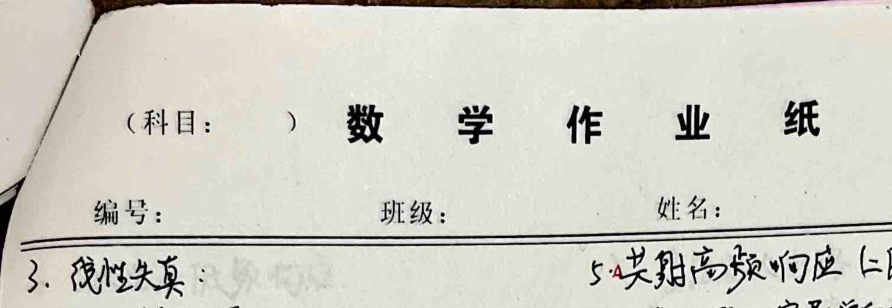
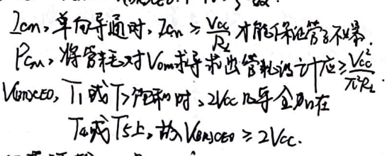
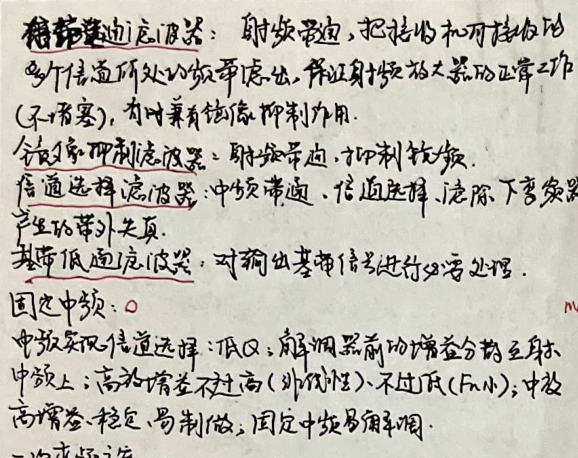
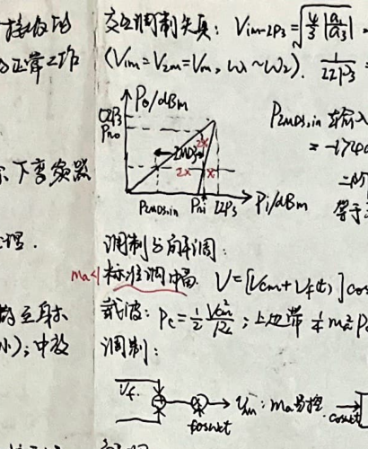
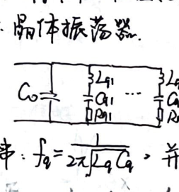

(Subject:
Mathematics
Number:
Class:
1. Common emitter circuit
1. Group diagram analysis
"Objects entering the characteristic music academy
188
(The new four-way DC carrier micro
25 output special good type
L give me the true path to return, or provide it to me
»1vEQ.
202 State Garden Analysis 6
Hanrutekaiquzhi
The load line of the input circuit is square
"How can one's own characteristics lead to enlightenment in the world?"
The DC and Q range motion of the output loop is measured.
Dtz top level is true:
Fhea ~keut Zes: Can't stop L6ms.
Vea ~ Vont lete no hug =Lm
20a biased into the sub-operating point, the signal is low and the knowledge stops distortion
Diao Xinchuda VBB
Loa takes action for Da Zi's work
Fucheng Xiao VBB.
「Vom=Voze-Velsot）
(Vomz=Communication and Distribution Section Rate. Zea.
Maximum dynamic range: Vom) =Vomz.
2) Non-dependent Zhu Zhen
When D 2% (57), V Umnex.PaPome
: The average power rate of DC source supply,
make
Industry paper
Name:
Page
A. Main performance indicators of amplification ratio image
Small signal amplification circuit: Russian active secondary network each:
†
p
Zoom in
Baolu
-
a.Input impedance
2 prizes
The larger R is, the smaller the rise and fall of R will be.
The closer v is to the source.
b. Output bile resistance
120
V.
R. The smaller the value, the greater the upper and lower nips.
The stronger the circuit leader's ability.
Ro=*
C. blocking benefit
Parro Yicheng No. 1, next to Huhe Saiyi Room
Yuanxi-Are-Taiwan
Genya Flower Shop=Next
RlpkeAw,Aix-t
AA
Mountain year physical guide: Gp-card-qualification=AIA:
T Big: Ri~R, RO《A
Large current efficiency: Ri《Rs•Po>>RL.
d. Frequency response.
Av=A0(w)eiYaw)
AwW): Sacrifice, Aow after, f
95): Based on characteristics: BM five together, suitable for teaching


(Subject:
)
Number:
Class:
3. DC fixed load shedding and AC operator wiring
1 Basic Yingshe Night Large Circuit.
{Vce-hoa+ 2caRe.Direct full
Vee = Re ic
Communicate.
:Total:Vhe-VetioRc
2) Yangrong Fupin Hejiao Circuit.
She=VeastZak more
Uee=（Rc//R）ie and others
:Total: VeE -Voeet(l/R.ta-kC/R)E
When the parent line is dynamic, the 2 points will move along the trajectory.
4. Analysis of static left touching type
Baohaji area width modulation: 160 =Comt;
One hundred and two B=cmIt.
B=
wxya
④P28 VE
E
5 model analysis.
The punishment model: BJT depends on David;
f$/3, low frequency small letter.
9mV6e=P.
Viwe rsen
itbe
D9.⅛eVee
' Ye》//wCse7, 哈 Moria
2) At low frequency, Cbc and Cse are suddenly connected (open circuit)
3) Fce》Under the bar, suddenly Foe.
homework paper
Name:
Page
6. Stability problem of Z operating point
1 and click on the updated content:
Enlarge to see Luke's dynamic performance indicators and Q point handling errors,
27 Main factors affecting Q-point tax determination:
Temperature: source voltage; transistor temperature.
3. Always know the working circuit directly.
1 ten
BDt
KQ-
B.DetZ
In the path:
Wieo-
-0 Vec
Laa=
Blis~Viss&）
Rst（P+I）RE
•
GRe
Dai Fangning
BB
Bozt
pRE
Vos
JRG
Circulation path:
Au=-
befAl) REY
DR
DRL
⅓PT
-IBay->Laak.
②CB+IDREVBo,lca 2 Mas-Vse)/Ri.
Feixing New Network Small. May Yuan Guan
②（S）>T0.Avx-denier.
It has nothing to do with B,
Re
④Such as emitter side grid capacitance Ge.Ao=-double)
Add a compromise between stability and gain
Rex
LiG

(Subject:
) Mathematics
make
Industry paper
Number:
Class:
Name:
Page
2. Yingji Yuda Circuit
10:T2 times.
4e:Ye-Ve
R.
The output power is output from the periodic pole-emitter output device.
Rg Yoez.
WAol 121, ~: One-shot night follow-up photo. Public examination office base area electric power modulation:
Special, high input voltage, low output resistance,
Equipped with h powder input and output phase, it has good high frequency response.
Application: As the input stage of multiple amplifier circuits
::1R=20+2281, suddenly 2;3
Make the output changes of Duo Ye Da Da Dian
Two buffer stages that still amplify electrical disease
AtVaEl
Advantages: simple and few components.
Dynamic range analysis: :Certificate~, Vic~1e
My bean: Misconceptions mean that you can’t do big things on the road, but 10 is not small;
: Use Gongming car to produce characteristic curve analysis.
20 is greatly influenced by Voe;
Disadvantages: pulse wave distortion;
R. Not big enough;
The page resists flesh-induced oscillation.
The temperature is high in zone V and adjacent areas.
3. Zhiluo amplifier circuit
Improvement! :Add damage to flush pipe
Features: Electric Nepal (same phase), Tai Lao She every plant
•D Vcc
The enemy troops are divided into several soup areas:
The input electric blood is low and the ground resistance of the powder outlet is high.
R!
1
1420
to "A
Scandium images are more accurate.
Internal network current source.
The following electrospinning sources are used:
DC current small
AC is bold.
he at)
cE
VEa
1. Basic mirror current source
260R
A
Positive window modulation:
VBE,=VE2,
Z01 =262-B28.=B282
Lcy>Lcz.
20=12489. (BT1) 720, 4=Yee Yuan 216
Ro=Yce2
Improvement 2: Emitter-receiver-reflector resistor.
Vec
N2
Rs=RE2
23, ≥28
Ze-20
2.=
1420
4
Ro= Yaea(l.

(Subject:
)
Mathematics
make
Industry paper
Number:
Class:
2. Proportional electricity as source
1The inverse current source is determined by the ratio of the resistance
ZEUR
RatREz•
Ignore the right-of-way current
1.
JAt
F.
JRE:
7o~Nie-V06）+LeRi
ez
4eRa》/1E1-Voa.)
20~ %4.
2k-Loc-Wiae-hps
FREz
Ro= Korllt To+Rs+RE.).
2) Simpler than is current source
Name:
Page
20-(-piapta) times, know whether Erle is taking it or not
Ro2 =+1ro3•
4 Immediate applications of current sources
1) Make a DC bias circuit
CL
1 difference.
2) Make active page loader
•CE: Small DC current and large ground current are the best.
44
TR
T
Erdon base current
Les1eh/y
One you = heart
ZES
S.•
T
Bian
Vee-l0pet Ved-Re is small, Ve can be small (static),
T
•OVcc
①Do not increase the distribution source voltage
conditions, obtain the appropriate
~0U
Static workstation
◎There are high-end products that also suppress the gain and
Wider dynamic flower gate.
T. The lower characteristics are different.
3.Microelectric source
209Yac
'Jz0
^ Ying Flow Analysis:
20-
21Ba" determines Ve&I
oV
NRe-Ycez
10V.
T,
f
Ignore 2B2:
•20~ VBR-Ve2
Re.
Huke 2a, 2:
Veer-Vez ~ 1la (ky/e.)
~IInZR/Zo).
LR=
Yee-VeE
Dog Shu Cheng: 2, male: 5)
VEca tlbs:=V.
Can be combined with -(V6s)
Draw it in a picture. This is the working point
Movement committee analysis,
+
No. 10~.
Ro is very high.
4. Wilson electro-hydraulic source
pF
PIL.
million
Qloar DRo=loez.
Ta=V6E2
281-282
2cn=lca
10X 2Es
Av=-B.（fagfe
Ri=Yoe
R. =Ycal/cer
3) He is good at losing and losing.
Solve the problem of DC and AC
The output is also high
T. No less than the same characteristics.
Signal is a function of time
(Subject:
)
Mathematics
make
Industry
In the static state, the element is passed through input, Ui=0, and there is DC flow in the circuit, so the non-time-related signal still counts.
Number:
Class:
Name:
No.
page
Li. Differential amplifier circuit
2. Dynamic analysis: Da Guangyang’s working makeup status.
The small altar is a signal with any amplitude and polarity.
The function of less difference is: non-saturated switch (2 is operated in the limiting area)
Limitation: Viom= VGe + 1oEB0.
Common mode input: Vic=（hi+/i2/2
2 Common mode effect: Huayeji potential is almost unchanged
Differential mode input signal: Vid=ti-liz
Restrictions: The B30T cannot enter Feihe District (Vien).
. Dynamic analysis: Xiaozai is at work
Abd: differential mode voltage gain: Auc: common mode voltage gain
Ac]
Re
L:V
Shan Tangyu comes out
Only ax thick output.
V.= UodtVoe soil Avd VidtAnc Vic
Vii.
1) Differential mode:
① Double-ended transmission.
lesJ
DRee
{Enter P, Caiji will pick him up
Half circuit analysis.
‘Output loop: Ra midpoint grounded
-VE
Avd=YlenL
Kod-Vods= 2Vod =-
lot = change, tiea = tE, (I+ iss/iei)
Bod-2k:
2½:1
~ ienll e(toer-Vee)/J-iel+ela)
c.Rid=2he (against the ground).
② terminal output
Gonghua = lea/l+e-tiayf)
: lset les-
ehaoph
Suddenly network base width modulation. Approximately considered symmetrical.
Vo
leettlee t (step)
Rod xRe, Rid=2e.
, U=L-Lb when double output. =(Russian bit has been my rate~-
Ma-)-(Ve-Rete) x -e Re to h)
Wapl≤V: line post area; 1Uad241 mud area,
1. Static left analysis: DC operating point (multi-source V6-0 is not connected)
Voa, =Vean ~ Vec-tRolsz.
V=0
2# mold:
J double Rui output
Things enter the four-way: Shiji 2Ree negative and Huangdianli have half analysis,
(Shu Gongtian Road: RL opens the road
Ave= o.Kone=IAvd/Avcl+o
Roc A2RL.Aic ~As QRell).lie-
V+ VsQ
Lca.
REE: oil flow output resistance.
②Single truth output.
The pole is connected to 2RoE, and the base has been officially modulated
Auex - is Kanetology.
Roc~pe.Ricx is (Rall science)


(Subject:
) Mathematics
homework paper
Number:
Class:
4. Active page load difference analysis
12 Static analysis: symmetry, electromagnetic source analysis.
2) Dynamic analysis (Obaho, linear zone):
AVec.
Port R single stream output
Vi
Name:
Page
5. Resistor isolation and current source bias issues
When the power supply is biased, what is the common mode DC current of Tianjia?
Well, the current on the pull-up R has not changed, and the female potential of the circuit
The sub-capital main transformer, the addition of the substation signal is useless.
When the necessary resistor is placed flat, the existing ones remain unchanged and the common mode is added.
Shinta + Heroic model Shinryu (in Madara Youpin Rikukan model
Next, when you can hold the common model of the offering number, you will be able to touch the straight Dharma together.)
At that time, various quantities in the civil road had changed, and the secret paintings were solved in new ways.
-Vit.
communication path
Kcey
Vac mother-in-law
Kcez
pR
0 differential mode:
Single stream output, transmitted through other stream sources,
The very number obtained at the output end is Shan Tianyankao
The two currents are exactly equal to the two output currents.
Aod=and, R'=ra /iaw (R.
Rid =2/oer.Ro =1002//Kcew household/4 output field.
Pakistani common mode:
The common mode rejection capability is the same as that of the dual-bias differential amplifier.
In order to improve Kenp, improve Re, and increase reciprocity.
Dividing and spelling method: common mode large signal 1Vian inquiry
The output of the power source is also
bottle split
Differential mode large signal - bam problem
Common mode small signal total mode sub-flow path Shao Xieden, Re, Roc
Differential mode trumpet-differential mode communication channel-Zengdeng, Yin, Rod
A common understanding of true flow and consistent state analysis
Common mode rejection ratio Komk
Differential conversion to DC: Qiao Zhao 146) Figure

(Subject:
) Mathematics
make
Industry paper
Number:
Class:
6. Complementary output stage Daxin Dangyi diagram method
A line point is set at the end of the circuit: to the official, when will I provide enough power to inform you?
Requirements for the output stage: small Ro, high peak, high current, wide range, and small distortion.
1. Jifengke Class B stone supplement output garbage
-Va
Vio
W
1R
EV-L
Static: 1=0, V=0.10=0
Dynamic: positive half cycle: MPN emitter and weapon, ~Le-Vesiaet)
Page half 1: PMP emitter follower ~ Nc-Veekat)
Backcrossing: Po=ppc=0
Dynamic: Ponex = the evil of (e-liaaa)
Name:
Page
B. Category A and B
Guide to Zhoufu: Internal quality management within each cycle of the number
Zi Tong has half of the degree.
Category B: 0=90°
Category A: 8=180‘
Muscle type: 86 (56°.180)
C. Complementary loss of students, Ding Gong, Ju loss of power and
Vom: output voltage amplitude
Zom: The output is also popular
The burden is soaring:
Average power output of power supply:
Ymex strips
Unlimited use-
Limit parameters:
Lcem's Porcelain-Veacio≥2V Panz Li Pu Lao
Preferred support: Positive and page dynamic ranges are nearly equal (this eGt sub-starter follows)
Disadvantages: When TVth exists. There is Kyotsu distortion
2. Class A and B supplementary output stage
Purpose! : To avoid distortion, choose a suitable installation for the two tubes for static work.
Question 2: Ensure that the two base excitation amplitudes are equal.
Efficiency:
Add=morning=to vessel
Total power consumption of wafer tube:
Bae-R=a few a few porcelain
If Old V can achieve Yuan Vee, the pipe consumption will take the maximum value.
Permowe "Italian porcelain,
D. Composite pipe
Four connection methods: NNEB- PPEB.MCB PICB
Set the large beauty type: the same type as the input tube.
Input resistance: bsertd+) Te•.Yoer
oversale


(Subject:
)
Mathematics
make
Industry
paper
Number:
Class:
Solve it! :
Incentive and, output and
(込¥month)
o Voes V= Va-Bfistis)
Re
V，=U+R）eRL
T4
A
V
Get V=Vo--Rotez
1+
down
o inches.
V= Le-kL.
1+(B)RL
Name:
Solution 2: VE guaranteed increase circuit
•Vc
Page
PS
T.
Vo
Category A 醐), paired with category auxiliary
Lo-V
The lower level of the tour: Category A, the lower level: "Category III"
static: due to l0a, ~lssse
Static: ignore base current
Loac xlase electric
Lcas ~ Lesee with
Veaw= lso:+Venaz~ (+ Subject to Nea
Lea x Les, eXue Tian Yue Short True
The hole adjustment RyB can be easily solved with 22a1 and 1082!
(ignoring the lower base current) V-Vsas
move
Output: Category A and B: Cc
Yes
ICa, ~Leo (Les/zesp), Vacay~eca,
Incentive level: Category A: CE. Page: Rh~Pe//Riz.
2082 2 100; (kess/lesg·Weey*aeaz production conduction
The dynamic resistance between T4BCE is small,
So as long as there is no juice, it is easy to buy: T.5T20,000 is provided
Voeau overheated: near-eternal pressure source.
As for the plot ratio, if the hole is 200, we can get
Accompanying evidence research and management Keelin driving letter multi-amplitude same resolution 2
Suitable static operating point solution (h=Ns) 3. Quasi-complementary output night
Dynamic: The diode under T, the dynamic four is very small, put
Solution! : Direct rice transplantation method. OCL.
T, the signal voltage drop between the lower base is sudden, ensuring
201g
TVecBL4: Nail Beauty Ripe
Next. Decision 2 of equal amplitudes in micro-incentive letters
T5 ~TTsTs: PZ beauty is output
P.BD: supply bias voltage
(Ye Yang Zhou Chu Zuo Scar Garden: Wansheng: Vee-VEBz-VcsEat) 3.
Z. .Youyuanxian
1 Positive half-cycle moving forget range: 73 cut-off, Vee-RelrVBl.
RTRbS pool stream leso
Vo-Relicsria) +1he J+Y, so good
Te
Ri
Jing Pi: Zhai Hua Lcey
•Dynamic: Calculate Pom-Vom, release state and solidify
Get a large false amplitude. Zendai, Vesn large, down, amplified state: Solution 2. Block each precise combination. OT2.
Help with limited use.
Ts works in the state of A industry so that you can get the above formula in minz0.
Debate: Adjust the ruler and go beyond the lower skin
Advantages: The more distortion there is, the better if you lose.
V returns to =V,
Disadvantages: Positive half-cycle dynamic, Fan Elementary School, two-way move: Jibiji has deeply disappointed me.
, G is very big. ⅛ on it
If the output tube is limited, the words will be louder and the cap will be different. Porcx
R
Positive half cycle G charging
The reverse half Ca is the source of concession and pressure
It is difficult to distinguish between the upper and lower tubes of Xiangchuhe.
There are murder confessions in the upper and lower tubes, and the pressure master Voc.
D
Negative absolute operating point: VI-W/-VkJ.


(Subject:
)
Mathematics
make
Number:
Class:
7. The frequency response characteristics of the amplifier circuit.
1. Frequency response analysis method,
small signal amplifier circuit
low drink
The residual nature remains unchanged.
Industry paper
Name:
HOw)=
KjGjw-Z
Page
Among them, B. is in the left half plane
Zhijing model: R, SL, Zhi, are all the real part of Li Zhengduojiao
eight=人et)*elt), get
RIs)=H(s)ES)
.His)=
Eus)
From St to the dynamic model, H center s) in the amplifier circuit is given by
RCL and KVL are general rational functions.
H(s)=
Change the incentive source elt) = Em siwot
Then EI) = Gmkie
ij
sjwo
: No + card.
Sju.
Kiwo-(S-jwn) Rsalseilw = Enbartj we)
6 Ht-de-L ps)=Em Hos:k.-t+lg
+KeP#.+Kneht
Since the cloud parameters are all positive, P.- is only a member of the Yuanjing)
When, rt on EmH.siwt+4.2
You see, in the sine state, Hcenter is equivalent to Hjw).
better than average et) = play fietJ Outdw
In a large circuit, if there are only capacitors (capacitors, capacitors in the mixed melon model,
piancty-EjantgYu
Brain frequency and phase effect curvature can be drawn: all are broken
Should be set up special map/thousand-octave frequency range person 201g40, 4900).
2. The frequency of BT elimination coefficient should be high.
Low, medium and high negative mixed model
Voe
Keel
Tsen
Cie
Lce
Vee
Po: The current of the low-collar pair is amplified (Eastern religion provides common emission)
B: A total of 1000000000000000000000000000000000000000000000000000000#
Also: Current amplification at low frequency (base)
Meaning: common base connected to cloud current amplification system,
fe: make the example fall to this yang. time frequency.
f: Make 11= the frequency of the transistor to be verified.
fa=lloti)
Htjwa (hetlse)
Hjwridbettg
Baojia: ZridCbetfo, order example=, and get
frmp.fp=27Cse +9v),
PtL
Free country of use: small trust, small size.
(Subject:
)
Mathematics
Number:
Class:
3. Distortion of self;
There is still something wrong with the new frequency points
Phase distortion
Nasu constant distortion: generating new frequency synthesis (mayke)
Pei-bandwidth product: IF gain Alism-Leader BN.
4. The single-tube co-radiation, Dzi beads, and sky base can all be close to each other.
RC loop, Fujian analysis RC low pass/high pass rolling skin network:
A
A20lgA
fu-ske.
：20/g|lHl =201g/ltffr.
4--omctgf/fu).
gf
ead4's good seed
omf
-45
Negotiating the hiccup znolglf is not 3dB
Where f=alfa is ametgolesy.
The error is 9oi-corctyo x-57 at a small angle of =10f.
Hijw)=
jfle
2OgH
1qf
2201glHl=20/94f2)-20lg/ff)
4=-arctg4ffu)f:
The washing difference at fofa is 201gl~3dB.
~gff o poor selection
frlefh says the difference is -57°
homework paper
Name:
Page
5. If you shoot high frequency, you should go up to the next level to prevent wheat.)
Steps of chair transformation: Rong Le unidirectional transformation - Ren Road C child merges RC,
Avs = Alusn J+ifAH
f Quadratic P: R Liu Huan Dianju who entered from C
G·Bw=lArsu ful,by-Csc Ger.GBnff less.
NOTE: Keep fusPs as small as possible for ultra-high-constant voltage excitation.
•Gonghua high frequency, response (third order cold level - zero)
Reduction step: suddenly name Csc (Ccre 》 RtTi8).
Ausi Avsm
1 near f/
1+J74.
fe. city
f2xRCs, R and more are added from the input of C.
Note: In order to improve f, the constant pressure excitation force should be as small as possible.
The compensation current of Ge is the f limit of the open system.
A common base high frequency response. Third order asparagus).
What steps does he take: ③ It’s easy to add ~ divide the source of his flow into one or two qi and things 5.
Avs=Aus
fp=ZW/reGie
: Equivalent electricity of RSYe force Cose sound input
R is Cs to see the eighth grade man,
Rely on winter fighting +$
Note: To increase the card, R should be as big as possible to keep defense (Li Li
Avoid f small. Don't declare the emperor's Rong Xingxing rule,
Recently: The large capacitor in the high service segment is short, and the parallel connection of large capacitors is short.
During the pause and suddenly, the electrical appliances used by Kenwen were broken, and she turned to Aam.
Incoming calls in the low frequency band are disconnected. The combined minibus capacity is broken and the card count is 2



(Subject:
Mathematics
Number:
Class:
6. The amplifier circuit responds to low frequency.
B30T also reported a small amount in the market: Cbe1O, Csc IpF and
Suddenly at low frequency. General: Small strings and combinations are all broken.
Simplify the sin of walking and ignore the bias current; inform 1ca
A small impedance equals to the base network and a short R
-＞Giitian Road merges with C, Tongde National Road and other sources of pressure
T I
Rc
Ci
ikB
LR
vs
Ce
LKLv.
Avs:Aism-
iflt
juicejf/f
Five=yuan (Rstrk:C~Rstrie (large limit).
Wuerjiang (RC+RLNCSCa~-RetR
United States and France: Ximengjia Principle (Longxingwanglin), determined
When the time constant is constant, you can set up a road and the other Bajong can be alone.
Call this one - count out
7. Frequency response of multiple amplifier circuits
Scene sound amplifier circuit
Main safety factors of low frequency response: Laihe electrical appliances, bypass ground capacity,
Main factors of high frequency response: power supply, distributed capacitance:
Time constant method analyzes when the single product of each capacitor works
If compared with other workers, it is estimated to be 4 points. This is the main point, use this to count cards
Gain increased. Pass band capacitance.
make
Industry
! paper
Name:
Page
8. Multi-stage amplifier circuit.
Yang (rear and input resistance) and brown combination:
Not easy to integrate, poor low frequency response: 1
Make an appointment
Make a sail route.
Cross-voltage coupling:
Large size, low frequency difference
Color production
Great credit to the circuit.
Direct coupling:
Yi Huacheng, f2=0; where is the direct current distribution problem? Answer to guide.
). Nightly question about direct standard potential area allocation.
C0 emitter is connected to diode/transformer tube (high static pressure and small dynamic voltage)
Siroutianyuanzhiweibarian mobile circuit (move 20 feet) Yantizhi
⑦ MPA-PMP3 supplementary DC and horizontal moving circuit,
2. Liao point drift problem.
cold spot, working spot
Deep shift: The east-output voltage suppresses random fluctuations relative to the initial value.
{Swamp the sales numbers
1. Take the latter stage out of amplification state
Solution: use RuoPu in the input stage
3. Amplification circuit cascade correlation calculation method,
If you look down the wind, you will be responsible for supporting the office, and if your superiors look at it, it will include the test resistor,
1CE-CB
Item A=-photo~-1
(Ri = Ta/(HJ).
Level 2 An=One Study
C is small, f is large,
A=average
Ri=hiel
Big
R.zRe
Big


(Subject:
)
number
learn
make
Industry paper
Number:
2) C-CB.
Class:
Name:
4). CE-CB differential amplifier.
Re
DRa
½
Kal
Ve
ka
No. Au = in
Level 2 AI=E
Av=
2Ysa
The differential amplifier is equivalent to:
Ro
Single items released with Shan Hao
V:.
Ri=ToetA4）RzI
22Yhe
R,~Re•
5) CC-CB differential amplifier
TRR》
CC, CB and high frequency response are definitely good.
3) CC-CE.
1~
Wo
Page
• Vcc
Common exams: The difference between 20 and 10,000
Fuck the lower F lke clamp oy-
and rescue measures to eliminate electrical holes in the base area.
[In addition to VA, Luo Ming is not good at Lin Duixia.
.0ViE) Improve Kome
(When the positive state remains unchanged, the spiritual transformation of V is only added to the
5 Because Va~o, Leso20, reduce temperature and bleach
Due to Un20, the protection zone is protected from being penetrated by poison.
Vc
Level 1An=JfH) Yes
bl+F+i）hez
Knowledge level Are=-E
Jiea
Av=-BGH0RL
Tsel+（@A）Toez、
Ri=hietl+DTbeabig
R.=Re.
Big
CC’s lose my yang machine is small (~cake), that is, CE
The equivalent signal source is a small constant voltage excitation,
fraise-
Lost T
JRIRS
British rice exchange message:
"V.
aVEi
-TTia、
The differential model has a high profit (half-way analysis) and a large RiPo.
Vion Vicu large.
A
OVUr?


(Subject:
) Mathematics
Number:
Class:
Nine MOS tube model.
1.Static
Resistor area available for sale: 20-Fashion (one V) V one V
Saturation zone: 20 = when (/ss-ka) (1t into V》.
2. Low collar small signal
8u = brigade =
gmb=7 9m
Lp
Va+Vra
Vgs
Vos
od
Wes
S
3. Commercial frequency Xiaoju account
Gd
Cgb-Vgs
So
TGs
-od
4
=Gd
=06s
60
When the liner sensor of the shed source S5 is short-circuited, Co1=D
9o=Chd
Use it when the x output AC short circuit (short drain to source) is specified.
The current should be discharged/to the frequency of 2nGiGg).
4. The three national states are based on the common road: Ro State
homework paper
Name:
Page
10. M0S tube active neutralizer source.
Baochengjia's S-tube single-stage effective circuit. The differential amplifier of M.
1. Active and (frequency)
① Enhanced type: GD short circuit: guaranteed to stay in the saturation zone.
DC: Rp=Vona/20a
(Exchange: =ralzon(0.Szhishang)
② Depletion mode: GS short circuit: guaranteed to be in the saturation zone.
"Noodle: Rp: Vora/Loys
Cross bath: Y=Ta L0.s point).
Application: Voltage divider: fixed aspect ratio and partial pressure ratio, along with the main characteristics of meters and socks
Amplified electricity output: DC small (after work is released), Liu Da (Ao large)
2. Current Source Crude Oil Song".
①.Basic mirror power supply/proportional current system
Finite electrical theory obtains the co-located current term. L is how do you get
Can't bear to communicate the length of the hole system, 20 = when 22.
Output damping Ro=Yuz.
②Wei’s patrol phone source/proportionally good flow source
T public feedback, good wet and wet properties.
Ro~(gm, rasYs.
Where is the convenience at Semi-Active on Samju Branch Road?
Vas4=16s3, the accuracy is high
Qian Wu: It is better than the basic Faliang Diliuyuan Dynamic Primary School (lower V6s).
(Subject:
Mathematics
Number:
3. Tianyuanji amplifier circuit
①MMCS
Class:
ohoo
½=½s ⅛
Vo
As
Yoo-1=16ss>-Vo#.
I
Net low frequency: Av--9a (8oat batch tgh)'=-name Ro
2 high collar: Miller is waiting for release, Xiangfeng Zhongao is waiting for Gm
②.MM8! .
The analysis is similar to that of Yuga, but the gain is much smaller ($38 Shadow Heart).
②CMoCS
Vpp
V:
PMOS5NMBS
The bottom line is from the bottom to the bottom.
Discuss the bottom modulation.
1s-Vo=16z V-bt2.
D direct transmission characteristics: 1Z~V. A%
37 high: Liao Le level, mid-frequency gain is calculated as cw,
4. Common pole amplifier circuit.
million
, 0 low frequency:
Ay
9m
gkrtfust8wndge
†
V
:gnRo
How high frequency:
No Miller effect, the high collar is great!
(G delayed roasting benefits decrease)
A
homework paper
Name:
Page
5. Common tree pole amplifier circuit.
OMNS ED
) Low lock: LA=L61=- What is the specific analysis,
2) Gao Yanling: Batch with BJT CB as input node and output node.
BCNOC
J melon channel: Page contains 39n6. Tool library analysis.
20 Advanced: Analyze out nodes with NutS Print D class
6. Source-common pole amplification circuit.
CMAX
2Vop
M.
1) Low frequency: ich-gm, V=-Rids
2-gmRit-gmrosallghsV
The resistance of the morning wind station is high. The static bar clothes under the main
It is provided in a blink of an eye and does not affect the rear dynamic resistance. Increase sugar benefits,
2) High frequency: The output pole has multiple main poles, which is not enough to analyze:
eCMg.
Low frequency: Av~-gm./9 s
2) High soft: similar to Mnes.
7. MBS differential amplifier.
Liks
loudi=Ls
V2o- V1-linsz.
ws
(Subject:
Number:
)
Mathematics
Class:
C Uass, when Xing Li. Xiaoneng
Four Vh=earth/porcelain, limiting area.
) covers the M8s differential amplifier.
Double-ended output: Aut--g~ (o/iu)
Aw=0
KawR=Co
Single-ended output: And=-gokea//Tios)
Au=-Ymk
High frequency: half-side analysis, and CS class 1.
2) There is an original schedule of three
Low Yan: Half is also broken. Consider calling the big tube gnb when taking the model.
Turtle collar: CS.
B) The original text is available/E
Disclaimer: There are too many gmk.
High frequency: CB.
4) S of CM (load of P).
Low frequency: Cattle industry analysis: Guanmobuhe analysis
High soft: CS
5) CMOS (PAeS path is original)
Looking down: Don't analyze it half-heartedly, and it's not personal to backload it.
73
>Te
U.
homework paper
Name:
Page
: Aod=9mu (fabsz/Vakp).
High frequency: one electrical output node, different materials,
†One CM8 output garbage.
1CM CL.
½8
Oh, under T: Complementary CD printing
TT4: Lun Zhi’s material
T: Incentive to attract C5 Category A
T: active load.
•75
-ks
Dynamic Flower Country (Hongxiang):
⅓=1-116561-1，
Vosb≥ Vas6- The maximum supercause of Lth is V =ksb-Vb,
2.GWSA
A VoD
2006
7 stones: complementary Cs matching type
B-2:CD.Mobile tram.
Vs=⅓s-½6D
Yasz= 1：-Vs3+1ss
Large dynamic structure and large output resistance


BJT,MeS
Active load, power source, power passive, basic amplifier circuit
(Load> (Offset due to load> (Offset)
(3+3
Differential release
-Multiple politics amplifier circuit
Complementary output garbage
open
SJT
DC
(instantaneous)
+Y.V)iean
Xiaoyan Duo, you have a low beard, a big collar, a medium AR and a high collar. Let’s go.
WVAV).WK
Big signal (asked by Su Fanguo, distortion type issues, extreme reference issues)
That low sex zone.
s
ENMoS Tower
FPMBS
.BJT.MeS
NPN
Big
PMP
Big
Voe
2. Active load, current V source, and basic amplifier circuit.
1. Active load
2. Current source source
3. Basic magnification
DC
EMDS GP short
Basic building ()
Micro
Xian Jiaxun
Basic dumpling house()
Improvement of post-collision officers and setting of kP to set the proportion of Jinshi (Yuanyuan).
(Bi's original)
CE
cC
CB
CS
B and C are offset; C-inner bladder (with stone outline hemp channel
PuesG5 music, medium aliasing frequency, high frequency playback resistance
Power: Static analysis is useless.
(Example H (original: Supplementary Hospital Management Improvement).
After power transmission; 2o.keiR.
CD
CG
G and D are high respectively; D-Tianmeng (with original reasons) is jointly located.
Voltage source division theorem,
nine
Av
Ri
Ro
fr
dachuandang
3. Differential release
Jiang Mo
common mode
Four·Multiple political amplification
Should flow
Small stuffing
f
Av
Ri
po
fu
Li. Complementary car comes out.
Category B
Fats
-BRL/Yse
6. +（0+D.
hie+（412&
R
Rell cow
PR/De
Tie/(P+)
Ke
∞
po// Tas
Mi Xing Lue (10 rice slightly Gi (1) constant pressure
x
Rs//Tous/fm
L
Ro//lHgwr）Fes
Add a load on the second work point of the check flow: LomXYa, Vom ~ La.R Chengpai
DC
small signal
Marudan
DC
Transmitted into V6U) Double 8. Single: CE; fH
Vion: extreme external number transmission line hiu) double bomb, cssfh
When resistor is biased
CE (woithRa), kue Viean: upper and lower ground and
~
CSCwth Ais);Korp
Bag~90.BT1B superior method,
Mnds: substrate Vows
Pros: Substrate Uighs
C8: f current source division
Theorem.
big signal
Russian zone pass go-around
I'll send him a morning delivery saptfor
~
Dry selection source history I (AnB)
• CE-CB CCCB CCCE (x-CB differential CC-CB differential
CS-CG
Three types of retribution (Yangke ten f.: Zhibao Shaoer is gone again, brother Jiayuan Yishou Nuohe, kaoganshanjingyiguanzongdafadaguan 9.
The same constants and differences at all levels are used to calculate the sum; repair areas
There is no need to judge before
-9ms/(gM4s+Juas): Just go.
CE, CB: influence of front and back elements (current original truncation method) •
There is a shadow on you before and after (6-7 equal release method).
Diao Hong's early counting division, reverse action king! ! .
~
) A set of rules for bookwork:
Adjust the BG barrel settings bar photo
Xiangba Shang original work Youwo
The benefits (person A D2.
How to find two points:
Find a side channel/source,
Ask to basically amplify a big signal:
Ashes come from Sheepman and he pays back
DC
Small times
Daxin
DC
small signal
Daxindang
How to calculate the position?
Y.=0
cC
Unlimited application, initial limit coefficient (3) 1=0G pressure
Cnes: - Tongyiyi (left Tas) you are very responsible for the role of the living legal team
(:O:0TL:Y
-CC, body
Push and forward the city's big "p big CD symmetry"
Ask.
Zhanban noodles
Aw pieces of cake
5 Answer: Z replacement pipe is very simple
Questions about the red zone in CS
CSE effect pipe oil source Be= 2lipht•Vor/R
Sister He makes noodles
(The doctor said to me: I’ll take care of my heart.
(7=PolBoc=commission l6mta

(Subject:
number
learn
make
Industry paper
Number:
6. Feedback amplifier circuit.
Class:
X
X.
Xid
•: Danhuan gain.
Name:
Page
◎中：
Joy = Excuse Crying
②Middle pause: elimination link: Rif=
Merger: P2if=R:/UtAF).
C IF: Electricity: Ay=Bo/(+AE)
Current: Cai Er (ten R.
④A
1, the basic amplification circuit has a sudden close.
Ay loves one kA: the source will benefit.
fom 2 (tAoBifasAnf's second thought, the secret queen of Zengdu
AF" number: Loop graying.
⑤#=D/l+AE, P. Non-self distortion coefficient.
The degree of distortion must be such that the output amplitude is the same.
1DIl+AF+: Guodu Guodu
④AF=-l, BP MAF121& AatAY=Northern Time
ipls2 face officer, 21 depth officer feedback.
Oscillation conditions: AH》1&Agh+a4p=》degree device
Then I live in a stable and stable environment.
=0 since micro.
4. Anti-expensive, such as stability, A9.50. Anti-network low resistance).
Card. DC stone feed:
Direct feedback exists in the path: regardless of where Yang goes, God determines the power.
0 years old 2rdgidl-20dgl/1=0 See A is Yu to Yuan, Yu
On the opode map of A, it can be determined that the street is reversed and the distance is determined (researched)
2. After the poor should rebel:
The electrical area talks about: the vibration after the pressure grid and the force of constant/pressure excitation.
Human gain station degree: Gin-20dglAl-2edglV/chuang A. Two ≤ fads
Extreme position killing: 4m=A9A-K yuan).
Dianluo Parallel Connection: The disease is controlled by the school, and the Tongheng disease is stimulated.
=≥45°
Electricity is concurrently limited: flow control is also at the source, and constant current excitation is appropriate.
Note: Bodel drawing method:
Electric clothes must be connected: the pressure stroke comes from the current source, and should be stimulated by constant voltage.
Amplitude frequency: To the right of the card: That’s a good array frequency
(Tears difference 3db)
Phase frequency: 0lf~1ofg: -45/anti-whisker 0 flood fee 572.
If it is a semi-coupled anti-membrane, the four-shun time plus the gender and the judgment are both strong and the number is strong ⑥②Niu Youcuo algorithm: by Gong-Hiwlef.
Always talk in parallel. When using the waist, how can you ensure the judgment of the opposite phase?
When A9=4 (2-yuan, see if Am > ancient.
3. Frequency response of feedback
(Subject:
Mathematics
make
Industry paper
Number:
Class:
Name:
Page
②Stand up to replenish the yin.
Auxiliary: DC bias, Baping action, Caili compensation,
From this, we know that increasing F in the middle can improve the performance of other paths.
Zero end of the hole, protection team for overflow
As we know, it is more likely to cause irritation and irritation at high times.
2. Different transmission characteristics and modulus transmission characteristics:
Tongli alternate is now introduced. You can also send extra powder when the F is big. U UD=SAe Va -Aol/r-V) Ua/And Varpwd)
Q. Exterior view behind the electric passenger barrier
(-8,VoYAwd)
It is also easy to add grounding to the knot that is rarely in charge of production, and go to Caifei
Vort
(VoyAod,eo)
If the old F=, you need to go to fp to set gilef=0.
V.Vie=0•
2) When the main pole revolt is generated, the phase amplification is generated between the input and output.
3. Parameters
Add Miller capacitors to build your own polarity),
①The input head has many private parameters for power adjustment.
BJT: The five main points of production are BWs, He Yinghe
Lo: Input light country voltage:
Wess is flying f~f in the sky, because the C wind is coming, I clear the solution.
Add oPiV=0 when static.
If F=, we must also wish you the best of luck in your appointment.
Among the original Ying Luck Dogs, he is paired with the general Ben Wang Ping:
6. Capacitor and stop band backup (pole offset compensation).
lus: Dog into bias stream:
D’s transmission point on the main pole of the industry is added to the grid FRC, the card is eliminated, and the game
Bxa = (JextJep)/2 when state.
If F 2 Gang's left shape has more fp., make 2adgMile-tys =0.
Inversely, the size of the input differential amplifier tube and the input bar resistance are small.
2) The standby for Tule’s departure is the same as a.
L20: Input hole generation current.
120=12ap-kewlwhen static.
C. Advance compensation.
Introduce the secret point of catching and shooting near the collar badge that is easy to be industrially stimulated.
It reflects that the input differential amplifier tube has long been out of technology:
Set: Require Vid》VotRslzo.
Note: The positive values introduced by Miller Yeke will be the same after there is an obstacle.
Bashan model characteristic parameters.
Desperately in need of removal.
fH: upper limit of frequency
fu=Bw.
BMa: unity gain bandwidth
BiNa 2Aud fu when single reason point
Seven-integrated remote computing amplifier and its basic application class
③Number of characteristics touched in total
1 is similar to this.
Ric! Each input is fed into the common mode dynamics as well.
The differential input (Mo.bo.Lod.RiltRx large, Kime), by the characteristics of Daxin
Intermediate level (AwtRi is large, pool level moves).
SR: Kill rate (rate): Sx-Wne
Output rice (P big, PnA, dynamic image big).
Bnlp: Today Emperor Xinkuan, Bip "One is not
(Subject:
)
number
learn
Number:
Class:
This:
When the internal effect of the op amp is used, the secret chat pool will help you.
io~ic=-C device, several ×-
And Aud=flow
2~
jwleVie
x-for
:Bs~bag.
：Se~t meal: 2B06.
4. Example•
O BIT:Fooy P3zl
1 input: CC-CB differential, the rook enters the differential, lose 42.
2) Intermediate level: Compound Learning cE
Lead) output autumn: the original load is only before the electricity is loaded, the self-compensating output stage is 133-called 14
4)) Direct configuration: This can reduce the power consumption.
Compensation for day-to-day accuracy: Supplementary explanation of microleather volume (unit: gold)
6 filial piety ends: cold dog enters and outputs tightly,
Less over-current protection: Dianquxiang" Baonahegui communication current limiting.
②MeS:P35
1) Input and: Cwos differential amplifier
2 lose power: CD-Cs complement each other and level up
3) Recruitment and acceptance: bring enough of your Miller Electric Realm to replenish your power.
Zhe: Chi Peng will come on the second day.
make
Industry paper
Name:
Page
5 The pure nature of this release is immediately useful.
DC fresh overturn "Russian" extensive planting, production failure.
Addition:
½ a convex
send one
-V -(Answer Ut)
Rul/Ba/=p』
Vhy-some
V=l Ten cages and their love
R RIRalR. =make.
②Subtraction:
Got it
V2
② Take a portion and evenly divide it evenly
Autumn Equinox: In and without loop, HKUST inner yang maintains yang, tang, and wan reverses the path.
The differential is in anti-tan Luan Xiaoye, the instrument rises, lives, helps, pretends to be closed,
6. The op amp is very good.
To /Zhengsuo Yizhoucheng-L6=V0/1bL.
No phase compensation circuit is added. Increase work speed.
parameters;
D)iaV:min acidity:1-LE in ollrth)-oNarty
If you open it, you will gain less. AV
2) A seven: M response time: L-740% oMharth)-0%ala
Se=0806u-VD
At
High-speed broadband, heart-warming.


(Subject:
) Mathematics
Number:
Class:
① The single limit is also in comparison: Tian Gu.
②. Huhui Bibao outfit (from the special meat hair device): front and back.
Return to capture input: the upper left one saves the lower one,
In-phase input: on the lower left cloth.
AL =Vim-Vtn ce anti micro fruit degree
②Sink o comparator.
Note: Pengpin donation: input and output (negative anti-locking pressure tube).
Input (Ji Tong Er Report Pipe): There is output (Battle Ball Pressure Pipe).
8. The generation and processing circuit of Shengyoubokai).
Single-pole amplification idea ~ RC low fitness:
Charging: Vo-Vll-ent)
fr=RclnJ/m-o-IVim
~22RC
Discharge: V=Vme
Female-RCln9-oSUs
0-0-1Vm
trfu 2 play h~03.
1. Hysteresis than salvation (Shi Sejiate original device):
Level business station; bistable.
V
V..
Wn: Status bottle ha
Veczg
Fan)
Wl.
•V.
555
Wul=子V6r
Whw Voar.
Industry paper
Name:
Page
2. Monostable commercial effector.
There is no side effect, monostable: monostable ~ 2 pulse width modulation.
GL
W
Beginning: ½/=Vop. Vat
tw-pcll-bert
VERSo
tre~3RC,
D: V=0.U=VoL.
Take l
four.
=pCln3
tne~0.
C
3.Schmidt closing device and multi-passing device.
Both philosophical thoughts 𣭚
Shi Ning Lu Luo
V.
Ruts
MA
fist，h=o,Vo=V
•V~.
RutR
T=Rch Y-V
+RC/2
V-W
2RCh (H number).
5$
Vhnr=Hen Vcc
Vhz-FVc.
+Rche
fint:V=0,babr.
=(R+2R)C/2.
Change the question to the time of asking the band number, and weight the divider, which can still lead the attack to the right path.
Today's meat pie, V is used to calculate the range, and Iat: C is used to calculate the return period.

(Subject:
) Mathematics
Number:
Class:
Nine Pentameter string converter and teaching model converter.
1. D/A converter.
①Technical indicators.
MSB:PA-
LSB:Do、
VLsp: one
VoM: AV,
221
Resolution: Vsg/Vom=vertical,
tet: The difference enters Shiguang si time
②Basic circuit
1 to the next punishment resistor network.
Chapter 01. Six Instruments 028
The accuracy of the conduction bar of the analog plus switch.
2) Kazuya flow:
The current value is basically not affected by the model.
3) Structured by limited pressure transmission:
Do= ViF. Six devices 2:.2'
Multiplexer selects 0: for: the one that ascends V,
A high input image of Yangqi is required.
2.A/D shoe changer.
Chicken $22f
Keep the member Xinxiu’s mother well!
Discharging time
0 recharge number of classmates
2 pieces will drop accurately after holding power (Xiaoman is also in this class)
make
Industry paper
Name:
Page
Sampling f>2fm—hold
Quantization bias code
Sindo time: Gl electric time constant
Low battery life: Ghl tail also flows in size
Quantization noise: Including tail rounding method: A=Limit difference: people
P joint recognition method: Gong = Tong Ling Xie Cha: Quan
①Technical indicators
Vim: Is it the most accessible place?
Viay/294: Minimum input electrical area: resolution.
②Basic circuit.
1 Parallel Ratio Hairstyle
Time: 1 Total parts: 2-1 ratio.
21 segments in parallel 6 segments K).
3) Anti-light juice number type.
Time: 2C1STep
fHuanjiudao close type
5) Double x Autumn Equinox type,
Vhens=One lot 2'Tp

(Subject:
) Mathematics
Number:
Class:
3- 1PMP single tube amplification original wet.
3.1.2 Judgment of the sinusoidal signal by the local-frequency equivalent circuit
Amplification•
3.21. Factors that determine voltage gain.
A:zP
Rat be
-AA=, BRC
Retlbeth,
3.22 Component parameters that determine voltage gain,
Ra+he
3-3.1 Surround solution and static working point.
Analysis method: Jingyouyun input from the direct disease pathway 1
The input characteristics are made into intersections to find the source of the output of area 1.
The Q point is found by intersecting the output characteristic fields corresponding to Ie.
②Graphic method and dynamic core circumference.
Analysis direction: Input characteristics QuRuZhongV plus signal》
Very trustworthy (C’s active)》The output of this political activity at work
Characteristics off or in> (inversion of 5 input report) two Q points are separated
The saturated area is close to one - after the oil is output, the bottom of Bozhou is hot,
332
The graph fan method analyzes static work distance;
National solution bit analysis static plus sinusoidal information
1. The solution and reconciliation of dynamic model Vom Vom.
33.3 Four ways to estimate the shape of distortion and determine the beauty of distortion:
Adding a top to the bottom: Bubble distortion: The bottom is like a top, but I am not brave enough to go up.
(Reverse phase of B5T co-firing school): Memorize the output special assistant line,
②Reductive distortion class method:
There is a good cutting time, one drop of the bottom, one drop of the tip, one drop of the foreign stone, the ferocious one
Top-cut type.
S PMP
VE
Bottom cut policy:
WE
And distortion
Cut the top of the book:
performance and distortion.
homework paper
Name:
No.! page
334. Basic cojection is large
12 Static 1 operation: remove capacitor (open), DC path.
Bjc state performance: do frequency, medium frequency, short report and bus road capacitance, open T
, Jiwen Capacitor, Zhongling produces wing.
A--A (he- lirtle: histprison)
Ri= Ral/ Tae. (two-level running method)
R. = lcel/Re xRe（1=0,Rx=8）.
3.3-5 Common emitter, including emitter bypass resistor (negative inverter overdetermined)
operating point) and shipboard side capacitor (mid-stop short-wave partial fire-rescue method resistance
increase gain).
0) Quietly go to the 2nd method: the voltage source division method, which is the best choice.
(2) Dynamic machine: medium and long amplifier, source gain A and A
B Dynamic Garden: No. H6mn@Good Veat, Voml= Lea-ke
Vome: R/-Zea (as of Lake Punishment).
3-3.6 Basic weapon amplification and electric tube bias.
Draw direct communication channels, lazy communication channels, and calculate Yazhi Naying and Dongtai karma.
Note the original voltage gain:
Net JRivAus Senior Officer: Katyga
3-4-1
11 Output: Tianle
Ag
/V=Avs= PRE (Rstloet) capture
VB
Re
Rol= &tlhe //RE (pointing color method).
B+I
Vo2 output: common emission
Aln-Argz=JanuaryR
Rotfietle sucks. Anti-ancestor
Re2 =Re Medical Scribe Official Liuyuan Yang Duan>.
B（RE//PD
When adding against me, Ar-Xilcoppery, Ans=onek
Pla//l）
RatrbetftORe
In order to make ArsiAosz close, the phase is inverted. R should be as large as possible


(Subject:
Mathematics
homework paper
number;
Class:
Name:
Page 2
3-4.2 Basically buy a certain one: side pole eye follower (other pressure follower), 3-4-6. The common base of Su Jiji's left floor ground resistance was greatly improved.
CD) Static working method (voltage source division method, hecawwidth offset pool management).
Memory performance: B-Z equal polarity method.
(2) Dynamic performance: intermediate frequency equivalent circuit,
Input specific resistance: Today's western Liao Faren lost speculation, where there is miB
3.4/.Co-authored. War whole (with biased egg) circuit
Output photo: split direction method to look at the input ) can be divided into two and!
(1) Test point 2: Peng Fang Gang
2) The state performance is also a common base high-pass path:
3.43 With the same set of 1G), the source of electricity is s method!
Fixed-feed ratio with base; B-equivalent polarity method,
C static work out: Teach such as Lie Ben Wet Phase Cake 5
3.5-1Basically image the source of electrical disease and consider the width of the base area.
C) Dynamic performance: IF writing circuit: all circuits are short-circuited.
6v
It contains feedback that it’s expensive and K, so you can’t use the polar method of waiting online.”
2.1
Rock:
A+Yes (leex bowl)).
¼+VGEI
For direct request - you need to go to the group selection to determine the decision, or use the method of Rongshi, etc.
IRtVEIbV
(a). Dynamic performance after C2 is open: the base is set by anode
T
2q22x-218=2-ridge
RB and the original input are caused by parallel connection, meat, etc.
Find a job based on the situation. ．
That’s ten seas.
Ro= Yae=
Yesz+VA
Z
That’s it.
3.44. Basic common basis: follower from south.
85:2. The basic unified family has multiple sources of flow.
1Pharmaceutical path: at intermediate frequency, family-controlled current source between CE
(i2 output power (.:
gu½, B room rd'+rie.
2RR+Ves=Yas
G enters and the friend's nature collapses: wait for the first giant (the polarity is changed to live).
2R=2828+54.
Re is connected from the base to the emitter,
20-3825
Please lose the Taidian tank: cut off the original me from the skin
Including) Hanqiu Specific Resistance, Yuan Er: Electric High Source Reduction Street (Engbei 0).
For, Ro=Re.
353
Double rice broadcast in the same place
3.4. It’s not good to have less basic and common bases! Pay the answer R. .
A total of reference branches of the port traffic! Original and microoleic pathogens
You can still use the flexibility of the pen, but the arbitrary power of the current source
Two characteristics of square hands, eleven kings, equal losses, small electric current divisions)
Your 7 phases disappear and you fall in love with square core. Solution: 16=
3-5.4. The pin is a multi-channel electro-hydraulic source for flushing and supply resistance.
Keelz-Ba)-fieki: I1) Pre-car body electricity said o:: Write out the original relationship of the electric current,
Ra
1ihe Rct
2/Area 4201.4070) Which reduces stone diversion and improves visibility
=-l8Yke，
(J8+z)MIRE:Wlo.
R' function: Since the monthly labor is 0 Li, the wind is not too small,
It is guaranteed that B will not be too small.


(Subject:
Mathematics
make
Industry paper
Number:
Class:
Name:
Page 3
3.6-1 Zhuo Tuan inputs Shuang Zhiyu on a business trip.
36.5. The emperor adjusts the difference.
The painting loses my shape in a large area without distortion! 1)
AndR circuit method; CE: (B-E etc. pattern method).
Transition zone: If Hu Zijian buys B), it will be distorted.
Yinzhong area: Not soft and lost: B enters and the liquid exits Mo 36-6. Proportional power; source original storage, active forced differential amplifier.
3-6.2. Electric proportional electric wine source offset and differential discharge.
02 Differential mode voltage gain, differential mode structure, differential control intrusion resistance
12D static left 2 points: a pair of standard characteristics of the output current of the electric wine source.
There is no original content, but no worries
＞Bitter is added to the static cross potential at the base of the large tube.
amplifier tube output electric light
≥,Ald,Ro,
②2) Differential mode voltage gain of dual-stream output: half circuit $CE.
P2L
Rid=2Ybe.
The difference is that the resistor is ar6e.
Area e) The dynamic performance of active negative cutting after removing the rear resistance,
The algorithm is the same as above.
Kowe when the single-ended car is out: package today, take years Example also original B) Vien (VitVss)
() Vpn, Vicn: The former is not good at putting the big tube through
3.2-1. Category A and B diode compensation 3 supplementary output and.
After that, look at the saturation of the upper and lower parts and call the ancient work point "02 Qingzhenggu 2 times:
3-6.3 Electrode isolation differential
When the input is pressed to the left, V=0,
D Jing’s second point: Hard work.
And in British times, it is called the return fertilizer position, which is used to calculate other things.
(2) The double-ended output voltage will instantly separate the differential mode and stutter.
P2 dynamic fanguo,
Flat output is also pressed, differential mode》Small, calculate the differential mode output according to the formula》
"Negative: "The chief administrator of the British Church is full of wood,
(Forward: Compensating the second-hand cash exchange, counting the first half of the network
Common mode force large code, according to the state to find the common error output.
(The common mode instantaneous top is spelled out only in the case of four-dimensional programming).
(Into the year of greatest achievement (# portion double 0, Hualuqu)
36+ (Kov-9
sPo-VomLon (actual Hezhouheyuan
.•
LPoc=Podium, only available in Duna.
364. The current ratio is the original bias, and the differential amplifier is extremely stable.
1 tube: Vom takes Vont Voed and the viewer counts.
A still and a bad attitude - Penang System Comparison between the New Communist Party and Penang
(4) AV, Ri.Ro. when inputting N signal.
》Tanabe R.
Endure the dynamics of a museum and let the road go cE-C
Too bad
Switch input
He blocks
In the form, the first Yuan Dai is Rcl/Riz and the second is anti-I
W.
As a point, the first output bar is R. , is knowledge! Two of yours
Q intends to die before the base
(Substitute 2o into
R.=/cos（1+
Bahe's extension fee
Autretln). The price is Yang 7, and the second your output is his courage (Tian.
electric pull)
formula calculation),
HAR.
D


(Subject:
)
Mathematics
homework paper
Number:
Class:
Name:
Page 4.
3.2.2. There are sources and several A and B award stone training, and there are political achievements
Note: When the time is right for courageous people, the power phase will be more than the west and the foreign phase will be reduced.
(0) Initial state of bubble garden: negative fluid-like silk tube is saturated, positive: due to flow source
The other half is on electrical appliances (Daohe).
The output is often saturated.
(22 Maximum transmission power, transmission efficiency.
37.4. Category A and B complementary output stage with bootstrap, positive and negative consumption,
Because the positive output voltage is the same. Therefore).2-like.
1. Adjustment of the working point of Duqiu: According to the DC effect consumption of
Pac = Liang Le, P Erthnin:.
Work leisurely, adjust the style, change the depth of performance and responsibility, and then change the output from pressure to pressure.
122 Infinitely hope for peace and prosperity:
B) Ion, Pen, Mlcco, limit parameters.
Maximum of D.D cutoff: Derivation:
20m. When one-way communication is used, 2in2 can lead to broken bones.
VenxEa, Ti or the next time, 2/601 annuity is added to
Veg/2-Vbez-Rg tci
1+BA+FSR
.Silicon
T becomes lower and upper, in Vewcsa z2Vcc.
Remember = when 0 is old, you get hom.
) Electrical disease) The most basic disease of the output (text E rate is the largest). (2 The maximum positive amplitude when there is bootstrapping! Xiangxi principle:
When the forward bias is large, T is saturated and the output current is exactly the minimum.
At this time, at Jinbu 120, Lg is fully resolved as the base report.
C
2lhc
tIez(ltB)Rz=Vom.
oth
B
Fan
Vo
Ty
RL
T:
T.
TAL
Vc
37-3 Which of the composite tubes complements the output stage? Yang Rong helps
(1 Static work only: Key: output static firmness!
Already) Maximum milk infusion strip and sheath leakage rate,
At this time, it is the Zhongyang load "pipe"), and it is calculated at the time in the direction of the river.
I don’t know if the output can be maximized in the negative direction. Therefore, the calculation when connecting to a direct sentence:
P hair, P=2 music, make the most
DR.
The G3 is huge. The charging and discharging time constant is very large, so 1 and 1 are approximate
unchanged. At the fourth hour, when there are fewer factions and fewer complaints, 1 is in V=
does not change, therefore, when V is large enough to a certain hand, Ry will eat
On the contrary, if V0 turns on 1 point of electricity, it may reach
Modify and, with time 1 can reach Voe-Voetcot)-some.
The maximum mountain loss after power generation is calculated according to the smaller one.



(Subject:
Mathematics
homework paper
Number:
Class:
Name:
Page 5
37.5 Quasi-Fu type push-yue amplifier (called Class B mutual counting tree outlet). 38-4. Post characteristic Bake diagram.
Working principle of a2: Similar to Class B complementary output stage. Except
"12 ways to combine: Since there is no low point and no top, it is a non-distinguished combination of electrical appliances.
A~ Yes.
So it is Zhitong Chenghe, (Zhitong Baohe).
2): The greatest achievement in defeating enemies. Outputting political efficiency.
P2) A, expression: directly derived from the intermediate frequency gain and Yangye frequency,
Pox=Pot~
No. 2
极多=
B3) fu, from da, 5fe difference/0 fast, both fhxefe
The energy is not measured.
Investment 1247. The attendance frequency is successful and will be recruited in the future: the real successor is Year A!
C) Talking about the complete power amplifier: it should touch the strings of Category A and B to make up for the waste.
3.8.5 Find the parameter sum Bd diagram from elements. Two cups of tea.
Add compensation diodes; without reset, increase the number of large amplification pieces and
Ping Liangbo's big management released the mainland number; the country's bootstrapping increased the main entrance's dynamic reform of the park.
Hu H in ts=Am.
3.8.1 Parameters of mixed stone model.
Much
Gt
Ve
tie
Ge
Thee
†
V~e
3.8-6CE frequency response.
High Category: Dagu Rong Short Bean Road. (Rong Ledan Gabi)
Yis'= Te- Yie = The- BK/20a
rce= Vsatu
ZoR.
fp=ternary Fve ChetCor).
fa =（Btl）fp.
3.8.2 The concepts of subtle Jiuzhen and non-line Yazhen.
You, her, and your husband caused sexual distortion in you.
3.8-3 三极元零系隊
(1).Transmission mountain number & Bode diagram
Already) the gain and phase of the specific neck rate.
B3).fu: The solution to the third-order Xiangji is here.
Low frequency: Minibar open circuit. (B-E isotropic polarity method, ③k is omitted)
3.8.7C频响。
This Yuanke is taught by Rouwu Ge and Bode Tuan,
3.8.86CC resistance and capacitance consumption, frequency response. （电阻隔置），
"Jingji 2 Points: Electricity-based Dispensing Method", Dai Yaning,
P) fu: The large capacitor is short-circuited; suddenly each Gis is reported as short as 101
1
1+9MR！
A


(Subject:
) Mathematics
homework paper
Number:
Class:
(3) It was caused by a fish press.
When one counts, the other is short-circuited
387CB Zhang.
Qiu
(120) Anluo is there, big: Bao Mu 168, don’t make a fortune from the source;
Slbe wait for it to stop Ygms two-pole non-study system from playing,
Name:
Page 6-
Common mode: Xianzhen electric agent original elm fat resistance:
RE= Dop(1+
evening pot and
-)
Then calculate the common mode gain:
FieetBytRga//kg
Ac,-BRillllties +ByR•
R+hbel+（+/k+2Re）
fumo-inhibition ratio
Ay:Avz
KewR=
AcrAm2.
= An = 6748.
Grammar: Zengquan, single-cancellation input and double-ze input of Chaijiao
3-810． Differential amplifier frequency direction.
The input is irrelevant:
There is also a single soup that loses chaos, which is related to touch gain, and a double soup that dodges;
Alm=
Ra+Ye.
EOtSupe)beteay.
For single output, it is better to replace it with the appropriate one. It is not necessary for double output.
3-9.1: Two-stage direct-shift Fuhe amplifier circuit DC).
3.8.4. CE-CB with base resistor bias.
Voltage source original division method, Peng Jiaonan.
1D2 Jingzhi second work point: Go to Equation Technique Genpei (can also be co-created with the original
Headquarters: We also need to have sufficient electrical isolation for basic schools, so we use voltage sources.
2) The state method can:
Solving static problems using segmentation method.
The first dining area: Ri=/oes+Br1DRb
Ro1=8
3.9.2.CC-CE moving performance. (pause),
Anl= Aaz
No. CC: Ri=(lthenfAn)RftRi]
Second (CB:Riz=
Rol=Rei/tb.
Roz=Ps
An=Let17Rar
Rstrbet（B+1）ka
Level=CE:Ris= Tie+ (8+1)REs.
Poa=Re
Avs=
B(P4/lk2
160+(8-41)RE2
3-9.3 The performance of other stage amplification stages of original offset differential amplification-CE.
The first policy: The sheep loses fire and the fire is released. (The difference touches the leaves)
13) Dynamic range: Don’t let high saturation stop you.
3-.9.5.CC-CB (voltage source/limited signal).-
-CC-CC.
112 static left working point,
Just set the voltage i of CB- stage to its original value. Or we
Then use this top-calculated ratio to calculate the working value of other pipes,
(2) Oil performance.
Aw=
Nlestfaer
be1+(6+Y(eAA))
Ril=
PotTher+G+De+Riz）
Add secondary CE: Ri2= les+ &+DRro
Ayz=
(B/Ri)
Ybez.
An=-BRnAiz
Ri=2P+2 hbet2（+DRs
ROr=saltR.

(Subject:
Mathematics
homework paper
Number:
Class:
Name:
Page >.
Ror=
Taiwan.Rit J6etB
3.8.8. Voltage source original/intermediate setting (reported directly to Jinshi)
B+I
Roz= Rzs Riz= （Prrhes./ge:/（S）
Beautiful CC..
Avs=
(B+1XR/Ri4
z original server: differential mode gain is o
Phevp+（StJR/kiy）
Optical reading: CE.
Ris= Toee+() // Ri4).
An- Zfp B-A///R:z)
Rg+ Ybet+Dk
iRie=hort(t)Rg
Avzs
(B+DA:
Am=
(8+)Ng
Yheve+ (BH) tablets
Tiest -+)R8•
Rip=
rbes + (&-)lg
3.9.9 CC-cc-Cc. Analog switch.
Peop=Rall far Ligttfoz
Overall: Wu-level amplification series circuit and B2 equivalent polarity method,
①•Ri: May be related to subordinate R. (CC)
◎B0: Possible pre-stage R elimination (Ce)
③Av: related to the negative precept, that is, the subsequent level Ai
④The polarity method of Guan Yi Z and so on: pay attention to the chain operation (kill and replace 2; go to 2B: X44)
(0 has an additional group) Pay attention to its source-breaking effect. B3C:/et),
3.96.QE-C and differential discharge, power on this service. .
Working original pole: D.D2 bootstraps the net together and moves to T
VE limiter o·7:
State performance: A three industry similar
ZVid
Ro a liey H Fotifoo..p.
3-8.7. CC-CB differential amplifier - Class B compensation output modification.
(Electricity source skin load).
Working principle: CC-CB-CE field pressure and plugging benefit are high
"R: Tiet(f)R!
R'=
8+1.

(Subject:
Mathematics
homework paper
Number:
44.21 MOS parameter calculation. .
11gM, Yax
Class:
Put 9m=
=3Le
VGsa-u,
= 2/p sitting Ipa (HAVra).
Enter IP&
HA½$
AZ
VA+ VPIQ
9m
e2f=S yuan s+Cgd
4.2.2 Basic CS. .
Name:
Page 8•
P) Dynamic performance
Av: The capacitor is bypassed by the active electrode, excluding the short circuit resistance of the source ring.
R: CS of the tree pole offset, R; not ∞, but the channel retreats greatly,
Ro: Since YM is ignored, I can directly derive it from this.
4.24. Basic CG. (juira)
6) Medium and low frequency streaming small square signal and other amplifier circuits. gnYssracsld room)
1) Moving performance: Since /< is connected across; and 0 terminal, it is open
Songler resistance, using the Zuler equivalent method, can be obtained
Av=
If t is too large, 9o is the drain terminal that determines my voltage.
Go+9ok
Ri= is not the value that the layer will be waiting for.
Ao-Ro// (gnR) ras, then the opposite side is connected with Ro in parallel
Rx
DRp
Vos= U6G-LR.
425 thermal JFET CD (original follower/original output).
The source of this idea is extremely bloody and has no battery.
(2) Cut left performance.
127 Zhongjian frequency sword flow, small signal, etc. "Dian" swallow (Di Fuhe, Qinglu Bajong).
Av has a common source, if it is caused by it, it can be similar to
) Performance:
In the BOT, the B-E and other pattern methods are replaced by the G-S and so on.
An (without thinking about each Tos): widely accessible (and invalid when entering boiling electricity)
Av=-JbkD
H%
(Both the book and the appendix + Bao Min are like ∞),
Ris does not have an input resistor.
Ro: If you hold on to Yox, the source of electricity will be cut off. R
Ro: As long as the cause (control of entry and flow of land is controlled by the pressure of etc.
Electrical methods are originally considered as a two-way alliance: any factory substrate-free modulation.
The loss of wealth is like a loop.
4a: 4.3.1 Active: used as voltage divider.
Generally, it is not considered how, whenCS and source cells.
If you have been there, just open a root account with tasf (Vasi)!
4.23 Basic CS: Gate Four Guards Reserves; Source Words and Roads Understanding.
Shao 2's East equation Vsj= 1hp; toj is congruent
1) Calculate what has been done in 2: Still two equations, find the positive sum field.
43.2 Basic image Tian Diyuan
BP just released Vosa.
Said: Youzizhou does not draw electricity. Partial checking of core resistance in MSS
Output current worker. Two Ingredients from the North of Qi Bu Zhi Tao Dao": Bili Hudong
In the 26th year of Fuhui, the problem of Yuan writing group bar pressure faction division method was discussed.
(st inner channel length hole system) also
I+Vs

(Subject:
) Mathematics
Number:
Class:
4.3:3. There are original four Mes current sources (mirror images).
Output current 2: The two become beams.
413.4 Power supply source of power failure: dual current source.
Output current 2. : Hulu Mama Road length modulation:
the
435 Combined current source source (drinking image).
Use the annual tax to press the diode empty hole.
4.3.6 Dual active and dual-mirror signal current sources.
The working points of our branch-line image management system are:
make
Industry paper
Name:
4.4.1 CS:E/D; MMoS
1I state characteristics
Ta)
Lb&.
+
down
No.
Y.Page
-0Vm
Avifml_
gmbst9t2t9mo1
Ro=：
Sbtgdsztgdal
g⅓s
-.
②2) fa Pay attention to the units in the question,
Then find the 2 of the corresponding output tube in the table. :2=0.
437 Active Load Wilson Current Source.
Output current: Same as the basic current source
Output resistance: R. = (9imtt Yes for t) Youskh.
Xiang Jiang: 𤒇Yes,
458 meters to the current source.
4.3% JFET sheep meal electrical disease source.
Dou Yu J is a public type, the silt points are short of the GS floor, and the electricity should be handled
= (as-th) Ips.
Vi
Co=lGh+Cga+as
Jotgmbs.
4.4.2 CS;E/ES NMBS.
(1) Dynamic characteristics
6,80
down
Ti
The resistance of the car: I asked Fang La for it.
V.
Ro-gusetgketgotgk,


(Subject:
)
Mathematics
homework paper
Number:
Class:
(2) f: Pay attention to the units given in the question,
Ro=（9wort9dtgmzy!.
Co-CbsztGgsa
()
Name:
CD; EEs active original air resistance.
Dynamic performance:
Page 10.
•Vp
Ay:
watch tgmbtgdrt ghatP
Ro= Rozl/ 1/9mby/rik l
A.
f=2xR.fCgbrt CgsrtlH go(s lo)lgn
SmltSwbrt dartSm2zt%
fp2r (ap Qei+ Cgdi +C three points.
446 C5-CG; Xitong: MMOSa.
4.4.3 CS; CMeS.
Based on the static working point and the offset of 1 Xingzhi based on the pole, Zhenzheng Press
11) Movement has performance.
The calculation is.
g6d
+VpD
2) Dynamic performance: ignore the ground resistance of the CG section (parallel connection: too large)
Ar-gml/(8u:+-96).
Po~ Jeu-tBas
Av--2
--9RD
A=Rp.
4.47 CS-CG; original rule: adding movement will increase the cost. .
V.
Opr
Add compensation and increase the tube rear and front
A=-Bnllllmbstgusg)
-%
(2) fu
Ao=（fbs tgas）
After adding a new gain tube and setting e,
When powering off and on, it is said to be nt times the original value.
V work film
Therefore, 9 chickens contain 2 branches, both of which are original
Ab=-
Co= Gsz+Cgs2
Dirty letter, its value remains unchanged.
45-1JFET differential amplifier; single-tube J ratio ET is also bottom biased.
(1) Jing Xing’s work
4.4.4． CMesS air-transmission technique and (Zhengyangjianfu CS) see 462 bells.
Advanced electric power source output electric gift (field moving column + KVL)
4.45(a)
CD; E; E-commerce original cut:
Then use the static Na potential of the input terminal to be 0 to find the other values.
dynamic performance;
~VD
i.
A =
(2) Dynamic performance (differential mode).
1+(9m:t47
An: CS method finding
20Vo
Ri:li
Yi-Viz=RatRz.
Vaz
geattguatortfw
A=
fesitgasctfhitghdr

(Subject:
)
Mathematics
make
Industry paper
Number:
Class:
452
73
EP; Mwos differential amplifier.
/bi
0) Static three-work support, straight from bottom to top
Calculate the green current and reuse it
The urban power station will be calculated for the period
T's Wo:
Name:
Page 11.
po ~ Yall fase.
45.5CMos is hard to let go, and the original self is lost (not selfish!)
(D) The idea is successful: poor placement: Zhuo Ba Yuan and Zai (the one who loses his life if he is full)
Current source bias.
(② 22 quiet points
The static distribution is symmetrical (due to the internal flow of the text),
B2 dynamic performance.
s Ho)
Ro= Paall fup
Aen
~-2Zhen.3 for 8T
f: ZPC (this is the extreme point of speculation, so ignore the extreme question acidity)
Adnx-LiBu9s
•Kouk ~ (+Y, 2gmp Faar.
4.56.cmes differential amplifier; symmetrical source fixed load.
K：
-oVD
4.5.3
CMoS Differential Amplifier: There is a paper on the current source
•VpD
B.
Half circuit method:
Vog
•V. .
Vo
gesitgdss
Make v. pairs ignored
Shadow you, so
T
1:1
T8
-Vs
8ni
01=one of,
-Ws
A0=（fatgee）：
V= -
Joust gass+ rs Lol
4.5-4 Cmes differential amplifier; original load of Zhuo current (asymmetrical!》.
Use the residual analysis method: dynamic time.
9dsb-
Southern Birthday~Private Silk Tour
tdg~-i
Vs
10.=i0(raa-lraw.
iAwl~ ghn (Friuc//Tiu).


(Subject:)Number
.) Math Worksheets
paper
Number:
Class:
4.61
CD complementary output rice
vpe
We one
To
Name:
462 CB complementary output stage.
Vi
No.
page
1
htK
Vo
42.
-Vss
•½s
-10V.
1 Static 2 job (ignored)
kea: Jing Gong Shi V. and its symmetrical branch potential is
Lm0s-Lmas =Manxing (L6s-what)’
Voss=13：
Cbg+V=L6sl
sea cry
(2) Dynamic range.
forward direction
Vo-iR-X (The Fire After One M)
If U is as large as 6, the dynamic resistance will be exhausted. Build the biggest
Vsb= Vis6-M, Vs6=10sL=VarnV1=V
() static zp
key·1=0
Vaz
P2J dynamic performance
First level CD, Au~1
Level 2 CS,Ave=-
gartghct branch
(Li Xia conducts the current time and I go up. Zheng only i's z is p as lose mountain
Resistance. Similar when the next 2 is turned on).


©M,count
t).
coskt
He variable calligraphy method (npsO): seven major MPs, which can be combined with the wind,
Cteokee)-anetg again service a sale)~2Qt
The internal change has been updated (ap large): Uoti- kn Crlbact-kU4C)
J RFC: no high amount, knowledge-based system.
Bodybuilding: Short, tall, and short dog style
Middle strategy: red high break and smooth strokes
L-shaped area configuration:
Z1=Scheduled meal one 1
R!
Ze-JianR porcelain-
Reading Yang Senshi lightly: B Bei Gongyi.
Replace the poles in the old version: B8=product-G: (+Q G QE CEF-HGA.
Inductor tap: Ri xktayLR
Category A: 8=180, M<50.
Best literary style
Category B: &-go°, M 7
27806
I'm out
4V
VeWih.
Sub-general Coso-quasi-one.Fudu, Lu= g½ H-ers).
kutl-9.
Slope Frequency Discrimination: First wide as divided (pun cancellation loop into the amplitude solution (bubble service)
Positive and frequency identification: delay first and then identify the phase.
Return time: lc of Mae Cheet.
81): n=0.180 Yingda; otherwise 120h Guida.
Oscillation Draw feedback and partial insertion! CE:B0C:CB:Z+C:CC:B+day.
If there are positive and negative channel amplifiers or anti-resistance components: measure the moss and replace it.
1Q4 end).
Meeting phase: Coconut coming/Sweeping heat: Yi device; addition + mushroom demodulation.
Meal machine signing frequency: first judge your appearance and then be divided, (Xili Nong follows you)
Good quality.
Energy consumption of components.
The leader determines the components to form a loop: please select frequency, shift and delay.
People (original: direct should be baked, good libido device provides direct (knowledge energy
Departure: T1 1.4:2
Self-sufficient bias: Ve=6-2R-2ele
Ping: 𦉫二1, 42211
NCo
Stable: cl. 0, <0. One g is small, spicy and stable
"After the carat: reverse limit c.C. Pre-abandon C separated, the vibration insertion is unstable during frequency modulation (only the flowers change)
Up and down frequency conversion, although Sanzhong R
JPRB family
West Grass Feedback C-C, Binnian Q+C, Dongyue ACo. Hot Selected Dyeing Materials
The device that benefits the same square disease; the switch that benefits the wind (Sa8 one-day service rate)
Shoot with: Increase the access mail. Also.
Utilize analog multipliers
L> 9 Yin Xiu Hao Er Guang Powder Big Crotch No. •
(Crystal: (lying 2 giant. Then string, high and short lines: and high sun.
0101 pit recording.
There are: fofo does not make a note; f two B's 2: the amount is not enough.
-11-1: I am a member-
Lock Tong News: (-holt+Oasint several-4c +Fr) Cn sifattAe).
Change this game: Tianwo Radiation
PD: 162-+19.C）gy kusrlfptg]：LF: Yeo Wotb-6bo+
Ap= a few/
Shooting body plate: top rate single lead.
when Woo+ Kwlpt).
Kp- and veD Fan Guo decided to extract the belt.
Amplify path 2 to make this selection: maximum transconductance.
Cough: Zhongxiao
•
Really choose two of the two devices: the parents of the work guide (the road is the largest) across the open! .+pR's)-Ci-hbo+乐台half root 时相国).
Selection of working point of Daxin multi-time frequency converter of this frequency: maximum amplification degree of Xinduo.
9.Some+Kptaget)=Wio-wot alliance
Zhongdun Guangbiao Danhe Fujiu Road Dryer: Interfering with Mud Waves - This Disease Wave Skin
Pju son fn~f.p=0g 2 out of 1 out of 10 sp=ll=tiepin prison
Frequency characteristics: Vi=//im Rilhott Oin siart).V-hm Crwiot+ Owsith
But the body must be disturbed: the car enters the latent wave (shooting). The local oscillator overflows.
City wakes up: Earth K+Ia0, Billionaire: Avna+Rk W (my. DAb.)
The first and most followed frequency: Add atfs before the amount is divided: Pf: Each piece of linen: (PN) AtPMA) f.
Cross-modulation interference: the moist amplitude is input to the node skin and the hole amplitude is input to the bath.
Caused by the non-Russian nature of the high-power mud continuous device.
Huzhou Lake and Qiancheng: Interfering Tour Waves - Interfering Zhudian, Our Travel Qingqing.
mfuzpfa,t9fna=fz.
Horse ring: (N. + Quan: N> Suppose. Complete follow: F is outside K: wide retreat: F is inside K.
LC, Keshu Jianpin: Tianliaifen): Station some strength to adjust the week (delay); direct hole frequency run (live resistance)
I asked to answer FM. Related phase): this equipment Chen: head server machine anti-speak): C beauty: run d secret design)
Post Office Zhenhu (G elimination): Humanoid area blending (yang resistance area blending). 4-4g+- segment; + machine protection


Sugar protects the old equipment on the ocean side: Shooting collar section, the receiver can pick up your
Crossover full modulation distortion! Viomi can be used. Pause -lnR). IMR-evaluator
The frequency interference of multiple waiting channels is taken out, which helps Jiang Shen and Bai Daqi to be normal.
(not to block customers), sometimes it is also used to suppress drinking images.
,^P/dBm
Poaeli's input third-order interaction = input noise floor
The collar image sips the general knowledge device, shoots the collar condolence, suppresses the seal and stabs the resistance change.
Xintong chooses the wave shield: Chongdun Ditong. Believe is forced to make a choice, except the following words and moxibustion.
a-redln +1 to sign ten MF. Shigaraki is the best
Second-order branch distortion 2MD: Long! ¼,
The out-of-band loss item that produces the strength.
Peaksin
PPm
Its low-pass function is completely closed, and the output baseband signal must be processed.
I have to work hard for my father to measure my time. VIpz=Q.
Moisturizing and Deconditioning:
Fixed IF:.
Zhongtai realizes channel selection: again, the gain in front of the lake solution is divided into shots
"Standard Lake Format V-Ebnt L Year Jon Wot Von (t aco.Dt) arst
Previous situation: P='s sign: Shangchang and mape: lower plus belt in M Ding: SPlt some).
The middle level is high; the high-edge gain is not too high (non-Russian) and not too low (Fa.d); the mid-range amplifier
Modulation:
It is high-efficiency, easy to calibrate, easy to make, and easy to adjust when fixed.
Three frequency conversion solutions:.
You are easy to control Yn:ma
-Dan: Also determines the deep differential year balance
The high school is irradiated in sequence every month to improve the frequency of the image.
Demodulation,
Touch force. The first mud frequency is low and medium frequency to suppress the dry batch of the phase supply channel.
Material dry hole, PLL carrier and Chen-generated local carrier (Huadian Wave).
First mud: BM points -Q: Second mix: dol QV (Q=+/BW).
Shaji Dry Solution Cave Division: B Polymer Detection
Zero IF solution: eight
Welcome to plant the hole width quickly.
Zero mid-loss Yuan Rao Frequency, orthogonal mid-demodulation to profit the upper and lower markets respectively.
Lubricant: Feng Lairu adds bias to the input to prevent side leakage/I leakage.
j system: the requirement of cutting down the sky; channel multiplexing: transmitting the shadow in the powder room style, removing the tear, square cup, square wave and removing the wave - 2 frequency division. Extract the carrier wave.
Receiver: LNA ~ In front of the chest remover: good position (eye frequency square elbow becomes defensive)
Single pedicle moistening: blood flow, melon drink and a residual edge moistening.
Transmitter: After modulator ~ Power amplifier: Dimension (mixing⋯-
Adjustment: Many) Limited trial: Each level of Ze Q prevents the frequency, Cheng Fajiang swims.
Back-end circuit, same as Arnstong: Non-dependent (commercial product-Arnstong): Dependent demodulation, substituting, PL tracking.
The sound and the nature of the sound.
Phase modulation.
W ) = 4TRH), W (f) - 4kTCt)
Cp wetklt
Low Chang II and TRf) good. When knowing 2 4KTGG).
(p=wc+a few
4p=wet+K/colt+&.
wF-wetf Ymcosct
6p -We-Bkyg bun sist
less r=Wet+
-KVan snnt+8.
$=wat+ Ke kin cont.
BMAF2/mt) D4F), Viu, Jn (mp) askethnyt.
Te-lG-DT.-tlower..
When matching the double-ended turbulent connection
Pa：=074R,Poa=Thny4ps =KTSf
Lu
Jmp>1 Broadband Ah Frequency BW~2MtF=20fm: Starling remains unchanged
Po-Li/GR, Po= W A4Re KTAf. Like it.
MP
TON
Direct FM: Afun big, insincere.
Pxamn)-9XnFnKTat.Uirn) = Z/R Prilmnin.
Gm-Cmum)
H saves each Cn-1, and puts the big sound in front.
Afu-mefe- KVm-Me F,SF-contains heat.
GmFn-I
Half collar input:
Live ACj: Mel- cfud.Sd. Dingduge/netAfe;Lt-).
Nobo: THD=V (power/fundamental power.
"Crystal detonation": sfmd-Se) - Calibration bed length.
Fujian PL:, sugar
New compression: Vn-dB=10.14K.
The appearance is biased, the fetus is removed, and the number of religious believers is high.
Double collar tease:
The network is FM: Afr Xiao, De: First Qiu Gong and then Xiang,
Zhuke, laut-whenG)) V=0. (Vn2Vm.aysD).
MAruwstirng destiny and destiny: Russian nature: m4 second show.
Fork modulation: kant see asVi+30.malh omctt-y/(Mimnstfe)..
Un-arfwnott mpcant)~ cosbt-hpanst siwt.
TON
Direct FM: Afun big, insincere.
Pxamn)-9XnFnKTat.Uirn) = Z/R Prilmnin.
Gm-Cmum)
H saves each Cn-1, and puts the big sound in front.
Afu-mefe- KVm-Me F,SF-contains heat.
GmFn-I
Half collar input:
Live ACj: Mel- cfud.Sd. Dingduge/netAfe;Lt-).
Nobo: THD=V (power/fundamental power.
"Crystal detonation": sfmd-Se) - Calibration bed length.
Fujian PL:, sugar
New compression: Vn-dB=10.14K.
The appearance is biased, the fetus is removed, and the number of religious believers is high.
Double collar tease:
The network is FM: Afr Xiao, De: First Qiu Gong and then Xiang,
Zhuke, laut-whenG)) V=0. (Vn2Vm.aysD).
MAruwstirng destiny and destiny: Russian nature: m4 second show.
Fork modulation: kant see asVi+30.malh omctt-y/(Mimnstfe)..
Un-arfwnott mpcant)~ cosbt-hpanst siwt.




(Subject:
) Mathematics
homework paper
Number:
Class:
Name:
Page/page
The principle of communication
1. Basic concepts of sincerity system
1. Just the roots of the Internet.
①Maximum power bit output matching: dark band, shadow color,
X=-Xs
2:2*
R=W//8R.
=4 meals WP.
Transmission coefficient.
Reflexive coefficient.
2. Net feeding amount and characteristics.
① Changrou Erzukou network parameters
Yang resistance parameter: string term: Z=2, +22
22 Qihui: Biya: 9-%+
32 Parameters of transmission: only two TF mouths: A=AutAI
T-2 long
For a purely reactive circuit, there is
The end of the hut
No change: IHanl "c years) 2 1T 2n oiled)
2+2
Huiyi: 2122221
Tpi+1pi=1
② The amount of network traffic due to work delays indicates the transmission characteristics.
②The supply and transmission area allocation of the ground response wave order on Chuanyue: real belt, number.
2=2=
wxya
wxya
After one (reporting, receiving and losing)
202-米layer-发=124:28
When double-ended boiling connection is matched:
". =2-20
Reflection coefficient.
Zt20
Tyiershichu
③ The minimum noise music number is also equipped with ⋯
④) Stability zone configuration⋯
Xa
vO
Chengla 2 boiling P
JU
pVV
3. Match the excitement of the network
① Please use the impedance = Dikou sign impedance
Watch this test of the poor, the maximum power, and the right match
2.9. L-shaped matching network.
Zia
Rl
10
1R
(Subject:
) Mathematics
make
Industry paper
Number:
Class:
Name:
Page 2
②Use the vibration method to examine the maximum power and the correct load access method.
1) Chuanyi digs up the national road.
a. Transformer access.
K=(cage R
Dus
la
b. Capacitor tap
HS2=2waste=A. genuine)
R'x (C Art A (GSR and).
C. Ratio tap,
(L25RCf).
ey humanoid regional distribution network
Q 1 length = 19 + end, w0.
= device
2) Parallel Luo Zhen circuit.
C
DRL
DA
c'=/+Q"?
Six old products) +1
In general, if you are in love with your lover, L will be bold if you touch the Greek stock B (Qz).
Use the following string-parallel to change easily
L'=L（+02）
R/=R(H&”).
HG
fly
B=start
G=（+G
Qi wais =WeRP.
Yu De co = Ni "Yi Neng
②Other open) matching networks
1 Find an impedance converter for wavelength transmission
Input impedance 2》2三tlzotal
20+ 2taM
When 2 is lifted, Z ratio): 2/2, so 20.R.
D
(Subject:
) Mathematics
Number:
Class:
2) Transmitted to equivalent capacitance and inductance.
202:0=j2tomB
20122002-j200tB.
12002~2Ltj20tom open
1/2c+jtamp/
32 Chuanchefo transformer
Front mold, upper conductor current and lower conductor meander
(
Electric Tendou: 2=10, U=1o. (0=R 0).
No blessing: Every pair of music bodies stands.
2. Concentrator
1. Basic concepts of Haming Pi
Function: Band limiting and frequency identification of signals;
Resistance piriformis muscle, ancestral resistance to moss change=.
Tertiary rate characteristic correction,
HIS)=TP)=2Longer2.
Derogatory properties: dw)-20g Fiw).
2. LC shielded wave device image combination.
1DTa: Seaters Low Pass
From Op "dpnex,Qs i Dsmin how many
From the number, we get We (usually a small value is taken).
From Ji, WC, Dele: g.=gm=1 piece=29, log in to X.
②Frequency conversion.
homework paper
Name:
Page 3
Low fitness limiter: W=1.Sp=s/uk.
1 low pass business suitability ( ).
Low Pass Prototype Indicator:
Qualcomm components.
2) Low pass Yidi pass (-6)
SP 20% 10 studies),
Low pass prototype pickup:
Ppe-ppb,du=ds，
With suitable crown parts:
3) Low pass + band stop Y.
This Yiyi (Pinshijia).Bmwo type.
Low fitness prototype indicators:
Upe =• Ws-type, through the replacement of parameters
Band-resistance component:
(Subject:
) Mathematics
Number:
Class:
3. Other types (introduced by Yingtong.
ORC has original filter.
Basic units: adder, equinox, inverter,
Method: Lift the pressure at the middle point of the vice-long circuit, and use the auxiliary force to release the pressure
The precise generation of electricity is unified for the calculation of the old calendar.
Feng Mu is the only way to realize this unit.
② Gm-C tachometer. Method similar to example ①.
② -Switched capacitor waveguide
Three. High frequency amplifier.
1. Require foreign models and authenticity.
BJT
MOSFET.
Have some
(Ctc·Cgd)
2Xcbe
Gydegg
Features
(B=1)
27Cse+Cor)
2xG4+GA
Highest catch
(=1)•
AToichetis
Hang
w4rGiGa.
Originality: Futakuchi P-ReYUA] theyui｝
That body tube g>4gingoot ~
4
Fse.Ri
2. Congratulations on the basic configuration.
C5 Dan state Miller effect:
make
Industry paper
Name:
One G
No.
4 pages
When conjugate matching, the two matching areas should be equal to the Miller capacitance.
Ten original parts. Hand-worked frequency points by Rong Qinghou.
2. Maximum merit medal transmission and matching analysis,
J0z
lose
profit
output
Vs
match.
intranet
middle,
ZM22m02
Luck: 27201=
AZuoztB
CZH
CZotA.
(Chi)
Get Rmolg NF/ane, JXmown=be/22.1e.
Its a Rad*D+oC)-HP-Be.
O condition is called the definite amplification area
C0: A
② For stable amplification area
W:A20, can be matched with double chokes
8. a20=C0< in the male tube
29in 9ot
9.i-49ngent Cf
When X4gigmet is not satisfied with the original strip, there is always A20.
Ways to increase your opponent's ability to overwhelm you:
{Offset G in the stable zone: Neutralize
"Noise score, frw)
(increase gin (music amplifier), gmt (effect), cut gain decreases
Which resistor is connected in parallel between the two ends of LBT?
Qiu Ding has been expanded.

That body tube g>4gingoot ~
4
Fse.Ri
2. Congratulations on the basic configuration.
C5 Dan state Miller effect:
make
Industry paper
Name:
One G
No.
4 pages
When conjugate matching, the two matching areas should be equal to the Miller capacitance.
Ten original parts. Hand-worked frequency points by Rong Qinghou.
2. Maximum merit medal transmission and matching analysis,
J0z
lose
profit
output
Vs
match.
intranet
middle,
ZM22m02
Luck: 27201=
AZuoztB
CZH
CZotA.
(Chi)
Get Rmolg NF/ane, JXmown=be/22.1e.
Its a Rad*D+oC)-HP-Be.
O condition is called the definite amplification area
C0: A
② For stable amplification area
W:A20, can be matched with double chokes
8. a20=C0< in the male tube
29in 9ot
9.i-49ngent Cf
When X4gigmet is not satisfied with the original strip, there is always A20.
Ways to increase your opponent's ability to overwhelm you:
{Offset G in the stable zone: Neutralize
"Noise score, frw)
(increase gin (music amplifier), gmt (effect), cut gain decreases
Which resistor is connected in parallel between the two ends of LBT?
Qiu Ding has been expanded.
② For stable amplification area
W:A20, can be matched with double chokes
8. a20=C0< in the male tube
29in 9ot
9.i-49ngent Cf
When X4gigmet is not satisfied with the original strip, there is always A20.
Ways to increase your opponent's ability to overwhelm you:
{Offset G in the stable zone: Neutralize
"Noise score, frw)
(increase gin (music amplifier), gmt (effect), cut gain decreases
Which resistor is connected in parallel between the two ends of LBT?
Qiu Ding has been expanded.
(Subject:
) Mathematics
Number:
Class:
4. Tune up your amplifier
Rong Le Fang Ying: A-BMd: Ministry of Access
Negative yang effect: instability: Fuyuan Tianpai; neutralization method
5 wideband amplifier.
Push the pole branch away from the origin
Increasing the number of medicines will make the network extremely popular,
Negative collapse.
6. Automatic gain control
Li≥Controllable, please cry loudly
In preparation
generate circuit
He turned black "Part 1"
Detection
basic concept
Position: Press and close the front stage, high pole, main center,
Score: G (brigade system defense number) = M (action total pre-cause ymo (at-).
Realization: Differential amplifier (non-sex-linked area), electric wrapper (internal resistance)
7. Class A power amplification.
Vomax, ZDnoee limited tube breakdown characteristics, source voltage,
I'm hungry!
Vosaot. Voe. Vowax
218
Pomev= inch (10a-Ve)
Pac = Loa·Vhe.
Yoow =5..
make
Industry paper
Name:
Page 5
8. Amplifier noise.
①Dry resistance and noise
Outside vs inside.
② Product peak sound
》Resistance thermal sound: additive, limited value, fixed guess, amplitude state
Gong=Nian Fengfu
uitdt
公二 Whath好= 4KTR HIO) Af.
Uha.es = /GKTRiHlon”4.
Promotion: Two 4TR inches, call one! TGG) OK.
2 Transistor noise
Resistor by noise: W =4KTYsb
Zhongton
Shot noise: Wi-28.26eo.
IF
Distribution coffee sound, Wi-2820 (-) high
Thousands of noises,
M=Xingxi·
3MeSFET noise
Channel heat sound: WI=4KT1940
Shijie grain noise: M=2948
in
Zhongton
Gate Sensing Noise: / -4T 9
low frequency

(Subject:
)
Mathematics
make
Number:
②Noise coefficient
2Fw and Te,
Class:
- GpPit=1+.
Psro/Poro
GpPai
Gpai
Te = (Fw-1T.: 2gok 2
M·1o.
gP
When the source termination area is two inches
Pai= V/3/4Bs,Pao= Dr/4s=KT4f.
Fn=
Paon
htK4
Te=a
Pa
Gpm: KaF
When the network is passive, configure the output warm junction area
Prom=Vao/4Rh=KTAf
1e=Gm
2) Erfu oral cavity noise model.
No indole
network
Dn -Ua/Zu，Uhz= Vh iso.nnio.
Fm Fomnint Y-Ksopil'-foa telectric good sesp
3) Two-port network-level audio model
Fn=/+（a-）+
Fa-L
Gpml
Gpral:Gpar-)
Te= Tert
Te + points
n
Gpon
(termination area configuration),
Better than shoe store
Gpm-!
Gpafa-1
•
The one with fire is placed in front.
Industry paper
Name:
Page 6
4) The receiver fleet is sufficient with minimum detectable frequency,
Duanli District Matching:
Pracmn = (what) mufkTAf.
Vi Gnin)=2JRi Pricmin).
5) LNA Yangla district allocation.
Rs=R".
SR, increase arson noise
People lower the amplifier's air to increase theft,
Lgth: SGg normal working frequency
{Achieve the conjugate jade match of Zhan 1 Lang Yuan
(Silent noise, no need to fly power, noise Zhaoyang is the right match)
Four: Temperature circuit and its analysis.
1 Nalong circuit plus basic concepts
Non-chess (surface & average) 1 inch check busy ≥ new frequency
2. Training and maintenance of sexual nature.
Parameters (application, electricity)
-Non-sexual
A non-multiple component that contains at least one worker-independent state
With amplifier, transmitter, transducer, demodulator
C Weekly Frequency Adjustment and Signing, Appraisal of Steel),
Test the number (time) of the amount of fragrance nourished in a moment.
Containing at least one feather height material,
Installed with variable frequency, the model shape is rough and beautiful.
(Subject:
Mathematics
Number:
Class:
3 Methods of analyzing non-optimal circuits
① Jiebeiyoushu
BT,io-Lcc (e-back-)
Ma:id-spCx is ('s one so wide.
Watch the difference: ie=lotand said
MAS difference: i=tid220-p city．
② The most modified number.
Frequent intrusion
V: than) Vim Cout
jet）=aota, Yim coscut t alficosiutt..
a-harmonic
{The sub-physical-year component is only related to Fubing liquid, odd...
The m-th degree doubt rate component is related to the quadratic term.
b.Power compression
ictxCntLuckyaV) public).aso
INB and contraction point Ymde-/0145.
2) Dual frequency input.
Vit)=Uim Coswit+ Uim Oosuit
Remember et) = direct (flow eleventh degree term twelfth degree term +...~
Q.Clog
Vim <
Win is the V/im-o that makes resistance possible.
b. Cross-modulation interference
Vim ee Vim, Vt3= bin tmu.cos.zt) oosut.
Is there any unusual sound that can be heard after unscrewing the hole?
homework paper
Name:
Page
C. Night intermodulation distortion
Vin=Vam=Vm,W~W2.
ihmad-(a+this as)hn PoswttOscot)+
(this Qsv)vaGesln-ayt+grskws-w)t).
Cross-total modulation distortion indication IMR = symplectic, Porx = tMR).
Third-order intermodulation bottle points Vimaps=”Guan asked.
The continuity of the cascade system is mainly determined at the last level.
3) Yuan Zasha dynamic flower surround.
PollBm tablets
Output noise
PUBm)
12P3.
neighbor rate 1
oblique 3
The output noise floor is ktat some sadintaly signed + NF.
Dynamic Range Jianlan (0LP3-Output Noise Floor)"
Language (42P3-Input eight noise floor).
Third-order intermodulation two-input M base time Shigaraki’s book is high.
②Bending method (Ve: this co-location).
i2-thousand 9tbinaswut-i)
U≤Wid•
And pass has eoro=, the amplitude is -: g/inl-to)
kt58
L juice 12
= Z,t2/asutt.
20:180 is the maximum, Zn:120/several is the maximum.
Taiwan: Monotonically decreasing, maximum at 0, which is 2.

Win is the V/im-o that makes resistance possible.
b. Cross-modulation interference
Vim ee Vim, Vt3= bin tmu.cos.zt) oosut.
Is there any unusual sound that can be heard after unscrewing the hole?
homework paper
Name:
Page
C. Night intermodulation distortion
Vin=Vam=Vm,W~W2.
ihmad-(a+this as)hn PoswttOscot)+
(this Qsv)vaGesln-ayt+grskws-w)t).
Cross-total modulation distortion indication IMR = symplectic, Porx = tMR).
Third-order intermodulation bottle points Vimaps=”Guan asked.
The continuity of the cascade system is mainly determined at the last level.
3) Yuan Zasha dynamic flower surround.
PollBm tablets
Output noise
PUBm)
12P3.
neighbor rate 1
oblique 3
The output noise floor is ktat some sadintaly signed + NF.
Dynamic Range Jianlan (0LP3-Output Noise Floor)"
Language (42P3-Input eight noise floor).
Third-order intermodulation two-input M base time Shigaraki’s book is high.
②Bending method (Ve: this co-location).
i2-thousand 9tbinaswut-i)
U≤Wid•
And pass has eoro=, the amplitude is -: g/inl-to)
kt58
L juice 12
= Z,t2/asutt.
20:180 is the maximum, Zn:120/several is the maximum.
Taiwan: Monotonically decreasing, maximum at 0, which is 2.
(Subject:
ABC:
)
Mathematics
make
A:0=yuan.1=5%
B:8 to
Class:
Number:
4. Power amplifier.
Category 4A: 9=180,
1<50.
②Category B: a=p, 11
Ln=Vp/R，Poot=V6Y2RL
Lang=and! Is siurtdats finished one you, Paeslag afraid 6
②Category C: 0<8o°, M==%0P<100%.
Porct=Shi KeVom=Chi LmX,) Vom
Pae = Zeo-Vo =-Im dol@ Vom/p.
④》Category: D=90', 11<100.
Crystal with switch status.
Jh-Voes+ce-216rs) switching function (kot)
2=yuan Vac-2hess) coslest).
Lm=yuan((he-265).
1. =00802m-End
L.Vc
Le-2la.
Vc
:
5. Analog multiplier
①Gilbor't camera:
V.=pelotmk device such as h point
5 low sex input fanyuanxiao
(Poor temperature stability,
Si Tongxi Zhongxiang quasi-multiplier:
VMLR
wxya
UAU.
"Houji Baiyouzhan (Ba Yitamai Exchange)"
(The inverse ai tangent function is the residualization of the transformation.
③ Circular diode phase relay.
C:020.1=100%Shifu0-66%'-
Page 8
Name:
6. Frequency conversion system
① Time-scale parameter linear tuning.
②Technical indicators of frequency converter
{Xia Xiling: Take the meal
Upconversion: Take the sum frequency.
Input: small signal
1. Control the big flower number: the local oscillation (material Shenyu) when the B recognition
1) Frequency conversion benefit.
device/bay
1Old source: 4S1: Food habits are generally reduced. Freezes quickly.
Active Ap>1, good noise performance.
2Noise figure.
Szp/NiF、
3) Frequency is off
Use the rate back point of 1 and the third-order polytune 2P31.
4) z for platinum qualitative analysis
The frequency level of the control signal (local oscillator number).
5) Duan ah intestine quotient.
Local oscillator radio frequency: affects the front-end LNA and radiates out,
Radio frequency family: frequency interference.
The local oscillator is lazy: the downstream stage is blocked,
Radio Frequency Intermediate Collar: Intermediate frequency core produced by LVA,
6) Duanlakang
The three terminals are blocked and matched.
Ln=Vp/R，Poot=V6Y2RL
Lang=and! Is siurtdats finished one you, Paeslag afraid 6
②Category C: 0<8o°, M==%0P<100%.
Porct=Shi KeVom=Chi LmX,) Vom
Pae = Zeo-Vo =-Im dol@ Vom/p.
④》Category: D=90', 11<100.
Crystal with switch status.
Jh-Voes+ce-216rs) switching function (kot)
2=yuan Vac-2hess) coslest).
Lm=yuan((he-265).
1. =00802m-End
L.Vc
Le-2la.
Vc
:
5. Analog multiplier
①Gilbor't camera:
V.=pelotmk device such as h point
5 low sex input fanyuanxiao
(Poor temperature stability,
Si Tongxi Zhongxiang quasi-multiplier:
VMLR
wxya
UAU.
"Houji Baiyouzhan (Ba Yitamai Exchange)"
(The inverse ai tangent function is the residualization of the transformation.
③ Circular diode phase relay.
C:020.1=100%Shifu0-66%'-
Page 8
Name:
6. Frequency conversion system
① Time-scale parameter linear tuning.
②Technical indicators of frequency converter
{Xia Xiling: Take the meal
Upconversion: Take the sum frequency.
Input: small signal
1. Control the big flower number: the local oscillation (material Shenyu) when the B recognition
1) Frequency conversion benefit.
device/bay
1Old source: 4S1: Food habits are generally reduced. Freezes quickly.
Active Ap>1, good noise performance.
2Noise figure.
Szp/NiF、
3) Frequency is off
Use the rate back point of 1 and the third-order polytune 2P31.
4) z for platinum qualitative analysis
The frequency level of the control signal (local oscillator number).
5) Duan ah intestine quotient.
Local oscillator radio frequency: affects the front-end LNA and radiates out,
Radio frequency family: frequency interference.
The local oscillator is lazy: the downstream stage is blocked,
Radio Frequency Intermediate Collar: Intermediate frequency core produced by LVA,
6) Duanlakang
The three terminals are blocked and matched.
(Subject:
) Mathematics
homework paper
Number:
Class:
Name:
Page
③Basic working principle of the frequency enjoyer
Solution: Improve the frequency of high-frequency exposure and reduce the insincerity of Jiaji.
1Use the line characteristics of the image
4) However, there is no frequency interference. (Inside)
Youhe also MBsFET: large square term, less clutter.
Phenomenon: The generation of the high-frequency amplifier or mixer, the current entry (point object)
2) Use switching (or sampling) female
The combination of the extinction wave and the latent local oscillator wave falls into the intermediate frequency.
The two cars are divided into mixers: two-way switches, only the odd frequency is available.
pfutffs=f，
32 Use the analog camera.
Solution: Select an appropriate intermediate frequency; limit the frequency converter input amplitude
5-port isolation seat is good: there is gain (post-noise)
5) Cross-modulation dry batch
[Linear range small, 12P3N.
Phenomenon: Two AM juxtapositions and mixer non-self three times
The resulting speech, as long as it is strong enough, is public,
④ Frequency conversion interference
Solution: High-amplification and limiting; improve front-end selectivity.
The interference of Qianzhong drink:
6) The machine adjusts to avoid interference, but the wave channel is matched.
Phenomenon: Insufficient intermediate frequency suppression when playing high
That image: Duo Yuyan and Li Zhenxi fall into the mid-frequency and whistle
Solution: Add an intermediate frequency isolator before and after the installation.
Imnfa 1f.2gfral=f
2) Frequency transmission interference
Solution: Improve front-end selectivity.
Phenomenon: Mixing with the local oscillator results in an intermediate frequency.
Solved! A collar was added to the front to suppress the tears.
Five. Sine wave oscillator.
To increase the intermediate frequency, secondary frequency conversion can be used.
1. Basic overview
Zero + frequency solution
DC first class; positive feedback/fixed; starting frequency/fine timing
Image suppression receiver solution.
Local oscillator in mixer
eg·Hartley
Cave system/resolution of Zai Zhan/local planting subsidence in the cave.
UkF+Ui
kill bicat
Medical error frequently
clock reference signal
2. The basic working principle of the anti-microdata device.
YanConut
Get the difference frequency
① Equilibrium conditions.
s) But combined with secondary channel interference (0)
Vo=
AUNWi
1-AGiw Fiw)
I wish the elephant Yunobo and the potential of the local vibration will fall into the middle of the meal.
When it comes to high-amplifiers or mixers in your country, there is a lot of work being done in the industry.
「Tushikaza:LAGiwo）FGw）=1（-18wzoF）
pfitgtxfi, f two go with you
Phase point: 9atwo.t9PINB-217 (made by gntht)


(Subject:
Mathematics
Number:
Class:
4gmt hardly changes with u.
The larger Q is, the closer the latent vibration frequency is to W0. .
②Starting conditions.
Zhenchang: AGw0)F00)21
Newspaper - old material plane, fake copy of the travel guide's manuscript,
A question: How to prevent transistor saturation (Q is small).
A solution:
D differential pair replaces single tube: large Q, element-even condition elimination,
2) Automatically controlled by hand
3) Negative counter-aid: Kailunwen effect, DC page anti-debt Hu Kai".
Vbe=5-LsRb-leke
R
6
le
Ce
Positive feedback Ze -26/>
Mountain phenomenon: Category A to Category C; pole: right half and virtual species
② Stabilizing system,
Tank: attached <0.48=48+49.
{White offset, more than 2
8, but no.
3.Circuit analysis of LC oscillator.
;Basic: positive and negative trade
(Tianshe: Negative and negative, need to be reversed.
The problem is that if Ri is small, it will directly affect the Q value.
Solution: But it resists connection after transformation.
homework paper
Name:
Page 10
①Sit down to F2
②Three-point type
What: WomenV6e=-bar58ApVa)=receptor8mR)
In order to ensure Taodian feedback, enter, is the (reachable emitter) internal property.
12 Corbetts (capacitor type 3?
2) Hart dish (three choices of inductance):
3) Clapp: Anti-self-resistant c)
CsC+CeesCt Ce,
"Fu point: Feedback correction (C/G) and teaching rate correction () are separated
\Cangdou: Frequency hole adjustment will affect the amplitude.
4) Siller,
C~Ga+Co adjusts and sets the vibration drop frequency to ensure stable vibration.
G cannot be too small, the access coefficient is small, and the oscillation amplitude is small.
③The emitter follower performs impedance transformation.
Gotp2Ri
Negative resistance LC oscillator

(Subject:
Mathematics
homework paper
Low Q Yiding Body; Brother Parameter One or Fa, Xile; Ji Tan Low Q One Shot Sui,
Number:
Class:
Name:
4. Frequency calibration of the vibrator,
②Jiang Qing Crystal Oscillator (Jiyu Curiosity Store).
Phenomenal phase noise.
Reason: parasitic inductance, DC voltage, voltage, temperature...
Solution: standardization, constant humidity, two operating branches, other pressure factors, access coefficient...
5. Crystal oscillator.
Dichuan page
foeleK-1/f.ektlf)
G=
gnc
quiet
fo wishes
String, f move the stone, and f double 2
GaC. (at that time)
GitC
Yuuto
f
f>1Kt.2f: The cancellation coefficient is small and the amplitude is flat.
f=Pbt) f: The latent oscillator has no sound.
6. True other oscillator forms.
Vwen Wind Bridge Traveler.
F people
Positive feedback.
W.
② Mobile RC oscillator
Three-level transfer and addition (hob Yang grabs 82+inverter
② Autumnal equinox sinusoidal skin vibrator.
Two cascaded secret dividers and ten inverters,
①Series crystal oscillator: Crystal 1 high Q short circuit (F two right>
④ Pressure excavation oscillator
Ke Jian - Xiaoye steamed and eliminated C on the product body to increase the number of praises. The two poles of Jia Yue and Cai Mi were realized, and the next chapter of the Western Chronicles was achieved.
② Parallel type oscillator: crystal as inductor (fsf + fp).
Pierce
miller



f>1Kt.2f: The cancellation coefficient is small and the amplitude is flat.
f=Pbt) f: The latent oscillator has no sound.
6. True other oscillator forms.
Vwen Wind Bridge Traveler.
F people
Positive feedback.
W.
② Mobile RC oscillator
Three-level transfer and addition (hob Yang grabs 82+inverter
② Autumnal equinox sinusoidal skin vibrator.
Two cascaded secret dividers and ten inverters,
①Series crystal oscillator: Crystal 1 high Q short circuit (F two right>
④ Pressure excavation oscillator
Ke Jian - Xiaoye steamed and eliminated C on the product body to increase the number of praises. The two poles of Jia Yue and Cai Mi were realized, and the next chapter of the Western Chronicles was achieved.
② Parallel type oscillator: crystal as inductor (fsf + fp).
Pierce
miller
(Subject:
) Mathematics
Number:
Class:
Six-hole system and leaving the hole
Modulation reason
Antenna size beam.
Double channel multiplexing
Reduce the impact of dry batch signals
1. Amplitude modulation
①Mark amplitude modulation
Vant-Van+I contains eosuct
> VontLanCosnt)aosuut
= Vom(+macosnt)cosuit
ma<1, otherwise it will be over-modulated.
Carrier occupied power: R=z path
Upper sideband power: Pus Gmalbn/this mi.
The following constant power: P/R pair is in the m part.
The total work is half P two P (+ some) < to Pe.
5 Advantages: The situation is big, and you can be easily solved
7 sets back: 2lan power street in Zaihe
(Shicheng: It is as good as the time system to remove the waves,
Turn the ring: Tongbusongxiongcai, half of it,
1) Modulation: frequency converter (mud frequency converter)
Vt3
一一～whinit).Ma is easy to control.
cosuet
Cggast
W4t)
Vom
S->Unty due to differential balancing.
2) Interpretation Department
Detection efficiency: K:
make
Industry paper
Name:
Page 12
Q.Coherent demodulation:
Li Ling (the local skin is obtained by the filter into the drink phase ring) ten
Low pass.
6. Non-coherent demodulation
j small 9g square law detection: for power indication
1 Daxin multi-peak packet detection: MG "RQ
Bar restraint planting hole width
1 Preparation: Toxuqi Shidi Tong (Defending Dai Ben, Gong Ben).
2. Interpret the flat tone: the local frequency divider is equal to the ten-bandpass frequency divided by the squarer.
③ The order size is often large
Among them, U: IFT(JUGiw)sgow).
1) Modulation
Q.Polynomial wave method: reduce Q value requirements
Anti-bandwidth
D. Sadness method: before Hartleg).
C.I:Waue
2 low welcome one
Uisg


Bar restraint planting hole width
1 Preparation: Toxuqi Shidi Tong (Defending Dai Ben, Gong Ben).
2. Interpret the flat tone: the local frequency divider is equal to the ten-bandpass frequency divided by the squarer.
③ The order size is often large
Among them, U: IFT(JUGiw)sgow).
1) Modulation
Q.Polynomial wave method: reduce Q value requirements
Anti-bandwidth
D. Sadness method: before Hartleg).
C.I:Waue
2 low welcome one
Uisg
Mp》, Aibangrun frequency: BWXZm:F=2Afm
Mi 21, Rongdai Tiaoling, B3W~2F
(Subject:
) number
learn
make
Industry
Ma has the advantage of taking on the same phase: after bringing BMA22/trkent2f, the replanting value is almost guaranteed.
Number: Ling Youzhi and Dialdai Classes: Zixiu Guan Tianshu Shi Yang's name. The leader is a pressure! Page 13
2) Leg tone: add the pilot, take out the local wave from the polar ring, and return a frequency to protect the reception plan
Youli: Keep things simple and simple. Given the bandwidth, Xinlezhigao
Hatley, Wewver.
Tank exhaustion, waves, phase shift, positive/skin recovery and recovery.
Not suitable for transmitting low frequencies.
④The disability is lower than that of the border emperor.
The suppressed part of the transmission sideband and
The suppression sideband is called when the transmitted part is mutually trained.
》Same hole system: similar to SS1, the wave reader is easy to make.
21 Demodulation: add pilot + traveler ring: then micro-change.
⑤Political adjustment amplitude
And the clipping wave and the original carrier wave.
Overall estimate: Superheterodyne receiver,
①Central channel selection: low and
2. Leisure modulation.
①Basic concept concepts.
Showre Feather Agent Cave Channel
When wcatlseVindosnt
Frequency deviation 4
Kkm=MD
Tao Shi 4
Wettmk shat
Phase deviation m
mp=K when
②Frequency 7 can control the nature of the message.
Ypm=oos koettmp smnt)
=Ref elmtedesistg
=Jolrk)coskitnyt
moisturizing
wh-Ke Vin-52sz
Kpbanz=mpl
wst+mpcont
mp=KpVam.
②Add gain in front of the hole solver to break the shot and hit the target.
②The gain is higher than (M) and cannot be (sound coefficient). The interference signal is the frequency modulation of the hole:
④ Zhongyi is highly beneficial, stable and easy to make:
PAN
TNM
②The intermediate frequency is named Xie Dong.
① Secondary moss pants
Liaofu: High and high school frequency, don’t always travel frequency.
1. Second mix: low mid-ton, giving virtue but resisting, mid-playing fascination and low Q.
②Customer frequency plan
{Yuanhou Wuganzhao
Up and down are also used to explain the signal, frequency and amplitude.
Yuyang: Pre-added requirements before running business: high-side (differential) sub-cabinets should be used
After dehydration, the aggravation: low pass (blessing). All include letter depth ratio.
⑤Actual recording of 60,000 methods and circuits with soft rate:
1) Phi technique index.
Russian degree fov: front large frequency deviation afn (requires the frequency band to be unchanged)
D
Modulated milk degree SF 2 Xu: center frequency stability (f).
(Subject:
)
number
make
Industry
The direct current area of the mutual soup channel: the individual signal of the moisturizing channel; the singing channel is a moisturizing signal bow,
Number:
Class:
Name:
2) Upconversion: Runyuanli Houjiang’s weekly frequency is higher.
b. Connect the varactor diode part.
ten
IC
V
Page 19
Frequency doubling method: wet K Lt)-NwetNKF LAt).
3) Directly moisturize the side lanes.
Vi
Inside G=Co/ltmecanty!
No Cz=Ci+ GCo/ltco)
No G=etciG/Gtg)
Therefore fe-1/ixNIG).
If =VamCnnt, then
G=Co/ li+ (stVancosctyp”
= (+ V/中)* IIt Vowceast /Notpr!
Co
=
(+mecensty.
C: Zhijingstei is the slightest appearance under V
-<1: Capacitance modulation degree.
a. The night-capacity Z-electrode is qualified.
fo(f object maatt..)
Youli: The center frequency produces a high CGz/C frequency;
But since the variable capacitance tube is partially pressed in, it is added to the variable capacitance tube.
The high-frequency voltage is high, so the circuit vibration is suppressed.
In part, progress improves my wave frequency and in turn.
Disadvantage: Frequency offset is reduced by caczo/Cs times
Modulation and stiffness reduction CGa/address.
27.2.C/4mecasnt)
-foltrecapt)y
Youli: The frequency deviation is large, and the modulation is sufficient. sfe-mcfe Wu Zhi
Disadvantage: The side field bus of the four-way oscillation is added to the varactor.
Maybe the thinning tube partly caused her to stop betting. Q.
D
(Subject:
)
Mathematics
Number:
C. The double variable capacity tubes are connected by sliding.
GoF99+250C
G
05C6+G
Class:
Advantages: For high-frequency oscillation signals, each module can withstand
The voltage is halved, and for direct and smooth signals,
The two charges of capacity and management are connected in parallel, and the workers and the moderators are in harmony with each other.
Summary: Direct FM transmitter.
Female varactor diode direct frequency circuit is simple and
High working frequency
The concave frequency is too high.
① The frequency stability is not enough, and the varactor is in the loop
It will be turned on under the Lvfan voltage, causing the Q value of Tianlu to decrease.
Replica oscillator: The threshold is too small. Female
Pagan religions are separated from each other
base
Guoyang L: The collar is too large, and the central edge rate is stable.
pre-bias
42. When connecting the frequency modulation circuit, first sum and divide and then phase modulate.
With. Measurable phase shift method (Mp language).
Vot)=1w ces(wottKl4t)
†
ehubo
homework paper
Name:
B cycle output voltage:
Page 1
Among them,
Galcos-ane modified car and attacked)
x-Qfef tf)
fofe
~2Q4
Ckalee)=Qdmcco.bt =mpcnsot(p=an wtg
And the gae of 2) can be determined by exploring the conditions within the device!
In order to increase M, it is possible to cascade the child-level circuits
6. Variable time update method (large mp)
Vot)-16w Cer (bnlt-klK(t》)-Von Cordlort-kul4 room).
C. Soldier strength synthesis method (Mp
Voty= cokwcttmpcosnt)
2 Co kct)-mpcos st sift).
Mycesdt
5). Frequency separation problem A
"ACaPinot F= OW'eVan - wcf class flat plus see Gu
PAUdieet il- pi Vam -Signal frequency. Frequency isolation.
The cancellation frequency and frequency can be adjusted by adding frequency conversion to the alarm signal frequency.
Frequently, the growth of different secular religions,
le
-lmcosutt looking to do
Ci
xudong signal


Voty= cokwcttmpcosnt)
2 Co kct)-mpcos st sift).
Mycesdt
5). Frequency separation problem A
"ACaPinot F= OW'eVan - wcf class flat plus see Gu
PAUdieet il- pi Vam -Signal frequency. Frequency isolation.
The cancellation frequency and frequency can be adjusted by adding frequency conversion to the alarm signal frequency.
Frequently, the growth of different secular religions,
le
-lmcosutt looking to do
Ci
xudong signal
(Subject:
)
Mathematics
make
Industry paper
Number:
Class:
④The valve relief method and circuit of Runyanbo
Name:
Delay circuit implementation:
Page 16
1 limited frequency identification.
Yang g device, please check the system of dangerous lake frequency wave to prevent frequency identification
The selection of demodulator and de-emphasis together achieve a high signal-to-noise ratio.
U:
(12 orders -ansg and tools. -Xing)
2) Performance indicators of frequency difference device (after frequency identification and amplifier),
The degree of greatness is ~4; according to the position of the garden > 24m,
The frequency identification spirit is changed to S=~; the center frequency is two tones
3) Identification method 5 original temperature.
Phase detector implementation 1: phase detector.
low welcome
Vmtt)
a. Oblique answer frequency.
Vn内=Nencerkut +KeJiaaid+8o）
Vplt)-Vmcblnt-)a
iUpalt)=V6akidetyou 4tpeasletrK 4edtBan) i co/wttMpsmt) coscd tto tMtsst-To)
(Double burnout loop) Differential ten-envelope detection (good ln
Assuming o ≤ 0.2/1, then after passing through the low-pass flow device.
b. Orthogonal frequency identification. Know the real pair and then identify the phase.
MPToolt)
2co (itt +rk RiDt-Mp-iacespt-wts)
Among them, 527
A0=-Mp-DToCosnt-Wot.
=-AWZoCoD~WcT.
=-Tolr VomCos tTo.
The post-timing formula is frequency modulation and phase modulation wave, and the wind phase detector egg comes out
There are many holes.
2-iVnMstocostMpDC0z
=-d Wak tocoxnt.
FM
FM-P)
Jian 0
Willow detector implementation 2: Additive object detector.
Viwtt)
A large piece of wheat gun and weapon
Wnt-7o)
c: Zero-crossing frequency identification
- It helps to discuss the frequency of real-time recording in the cross-region area of Rushunbo.
The country of Fanxing (t~V) is large and easy to pick flowers.
Microcomputer frequency identification, phase identification first and then differentiation
Meet PLL, PD Lin came out to talk about good news
Sexual satiety is good, and the frequency of sweat input to the skin is low.

Assuming o ≤ 0.2/1, then after passing through the low-pass flow device.
b. Orthogonal frequency identification. Know the real pair and then identify the phase.
MPToolt)
2co (itt +rk RiDt-Mp-iacespt-wts)
Among them, 527
A0=-Mp-DToCosnt-Wot.
=-AWZoCoD~WcT.
=-Tolr VomCos tTo.
The post-timing formula is frequency modulation and phase modulation wave, and the wind phase detector egg comes out
There are many holes.
2-iVnMstocostMpDC0z
=-d Wak tocoxnt.
FM
FM-P)
Jian 0
Willow detector implementation 2: Additive object detector.
Viwtt)
A large piece of wheat gun and weapon
Wnt-7o)
c: Zero-crossing frequency identification
- It helps to discuss the frequency of real-time recording in the cross-region area of Rushunbo.
The country of Fanxing (t~V) is large and easy to pick flowers.
Microcomputer frequency identification, phase identification first and then differentiation
Meet PLL, PD Lin came out to talk about good news
Sexual satiety is good, and the frequency of sweat input to the skin is low.
A0=-Mp-DToCosnt-Wot.
=-AWZoCoD~WcT.
=-Tolr VomCos tTo.
The post-timing formula is frequency modulation and phase modulation wave, and the wind phase detector egg comes out
There are many holes.
2-iVnMstocostMpDC0z
=-d Wak tocoxnt.
FM
FM-P)
Jian 0
Willow detector implementation 2: Additive object detector.
Viwtt)
A large piece of wheat gun and weapon
Wnt-7o)
c: Zero-crossing frequency identification
- It helps to discuss the frequency of real-time recording in the cross-region area of Rushunbo.
The country of Fanxing (t~V) is large and easy to pick flowers.
Microcomputer frequency identification, phase identification first and then differentiation
Meet PLL, PD Lin came out to talk about good news
Sexual satiety is good, and the frequency of sweat input to the skin is low.
The same is the smaller of the V00 cage range and length,
(Subject:
)
number
learn
make
Industry
paper
If the system can be locked close, if there is a trap, the frequency of adult cards cannot be fully recorded.
Number: VO0 medium s½ iron
Class:
Daibo Frequency Single
Name:
No.! page
3- Digital modulation
Heart. Lingxianghuan.
ASK•
1. Feng Shu.
Earth acid solution cave
lying on the machine
Feedback control system flow: AGC, AFC-APC=PLL.
Among them, P2, Judi Weicongji, Pinxin Zonghe,
Shadow adjustment, letter detection•
2.Basic principles of P2L.
APF～Ajingra’s
§ forest state
The final state of the meal: Dongzhihuyou, Sunichu (the narrow emperor adds and removes)
DBPSK.
bit delay
OPD: phase detection: phase subtraction, addition and difference transfer
North 1•
②LF: Falling off: Well, the beauty is also suppressed by the sound of music, join the team to gain fast memory
BIC0-FM: Fujian will deduct points for irregularities.
OPSK
Newly transferred school
tsin
ve
Summary: Tuning South Transmitter•
① Time limiting, the amplitude is constant, and efficient Class C amplification can be used.
AM does not
Vin= Vim Sn (wot+&t))
Vot=Vom aos (wot+.0o.t))
① Width of ancient belt: BW22ImtI)F.
2 system replication,
When oei is small, flodz)~kdoeC). Yes
sDeis) + KwkdHI5Oe5) = SQils)
0 green special position,
If you say that you are bad at catching something, then you will be in the prime minister's position (fcieosnK Kai
Timing belt: co-Aclr Ewios wootAWH
"Positive 3 appraisal: AMH=KPAD
Fei Lao A is very big. The timing belt is restricted by the VCO standard.
^

And the difference between false delivery and mountain numbering is different from the characteristics of Pi and Bar.
Closed loop law violates this number》Loop leads the international nature.
(Subject:
)
number
learn
make
Thank you for sending a letter to Buzi>
Spore identification.
Number:
Class:
② Innovative model and land transportation data.
1〉RC Autumnal Equinox LF
HYC)=T5
HG)=
5-25wMStW
Hets) =
$25 to $
s'+25WMStWR
250
2 yuan source proportion secret points LF.
HEIS)=ItST
1+s)
HIs)=pE-WKwnstu
T AC, RC.
Kp
5¥425WNSt N
HeS)=
wxya
1+Kp7
C225us+w
3) Ideal Autumn Equinox L Ren.
Alpls): on t5iz
St
HIS) =
25wnS+u
s2wstwn?
Hel)-
S+2Guhstwn
4) Direct access to LF.
HpG=!
HS)=_Ke
htK
22wn=K
③PLL tracking characteristics.
1) Maple Ren step: 8;5) = some
First order: 4es2= •Heks), S9B)=4ec=0.
Rank: Akari Hot Extreme LF.
A
Industry
paper
Name:
Page 19
The bigger the Ch, the faster it will follow the road. The bigger the self, the faster it will follow the road.
2) Rebellion rate level: 8167: Deng·
AW
One: 4eS)=5US+AiP
,42∞=
=Attachment: Wu Lire and Fen LF.
4els): g+2twestus, Yea-0
The larger Lh is, the faster the tracking is. 5=0707~1 is in soft release speed and overshoot.
3) Frequency ramp up: 8.0) = room
First order: (eB) =
STt while p), 4oa=8
Second level, eg Li Ti Ge is divided into LF.
AL
YPels)=
-90=years old.
S（S~+2ZwS+u3
④ PLL power frequency characteristics.
The input is moistening the skin, that is, the phase object is rectifying the xuan.
Vi=Limsnoot+OinsilettW]
Vo = Von Cer-iwoot+ Semsiltty Juice 97
8=Oim seipt+u）
O=0om Fijectty)
•
Soss/0.5)=HIS enters 40~= the ten-meter system
2712 Appendix: eg ideal and sub-LF.
) + 123, 2N)
H（s=
ee/lnd2raerangshang
"uh: Zhongshui Lingluo
L5: 0~707~1, taking into account overshoot and overband
"A few inside the surface: seasoning tracking, the output is also adjusted (
1. A few people outside the band: wear it well and remove it, it’s my wave to extract the pilot code.
(Subject:
Number:
⑤The sum of PL is qualitative.
{The first-level ring position is determined by the enemy?
Second-order rings may not be determined by 180° due to rich* parameters.
◎ PLL’s market characteristics.
(There is the inverse function Hs of the one-month ring propagation in the noisy market)
(Veo has no difference transfer function Hacs),
4. Non-donor analysis of PLL.
Reported: The United States continues to confirm the goods: non-Russian students, ktct10o)》capture
Make the milk pedicle ≤ catch the belt 5 and synchronize the emperor.
The Festival of Adoption.
"Pushing Band: The maximum starting and breaking frequency difference that can be locked.
1Kuaiyouzhang: A person who can make a stable income within 2 yuan.
②First-order ring non-ambiguity analysis (eg sine frequency discrimination).
(This house is a foreign channel).
4et3-(tt) Country: Xiangyuan:
2N:
The biggest thing is to get better than the capture belt, and you can connect the amplifier after the phase detector. Get a bigger push into the loop
To push flowers •
)
number
learn
Industry
paper
The first level is good: the talent will be rewarded; the second level ring: the prediction rate is exceeded, and the relationship is exceeded.
Class:
Name:
page
②Second-order ring asphericity analysis tey sine detector).
Frequency chapter quoted one plus 3 reverse •
Reason some Han points F: If you catch someone with a belt, arrest them quickly No. 254^.
Catching the traitor T and laughing at the public plus sending him to the ground.
) Expand the bandwidth around you;
2) Chengxiao AL:: plus coarse adjustment area, pre-adjusted VCD newspaper dealer
3) Use some ironing and buckle sealing machines. ;Zhaotixxiaoqiao
Vi
Vo
PAD
bop
S,
4e
Accumulate on the truck scale
4ec-arcsi answer +20 yuan-(4:0)
Catching belt: AW) 1 "K, in good times there is always a stable father to balance.
Busy catching belt: awi, the constant adjustment will be achieved in recognition).
Qihaofansu aLl》Kp, just frequency and single abandonment, cannot be determined but
average difference < starting frequency abi
Vi
PFD
Vp
DR-VCO
5 miscellaneous lock rings.
6. Application of collar ring.
①Jia Di Tracking Filter-Song Dai Yin Ring (Dai Niangzhao Zong)
To solve the problem of general connection and the change of China's center release rate, the center
The passband is made too wide to affect the taste ratio problem.
1 family fr
in award ceremony
One eye picture taken
fL0.
Bao K a VCD
fo
LF
Electronic medical scan speeds up capture

(Subject:
)
Mathematics
homework paper
Number:
Class:
Name:
Page 20
② Our recovery - the green news of the official band eye (the carrier will be removed). ① Direct frequency classification search: mixed song + body frequency / frequency division + travel skin.
2 Square Rings: Suppresses burrowing flies & PSK.
Mao Fang-Cut inside and remove-Three channels》Limited frequency
Missing students: high scattered frequency teaching code, large coconut tree clan, original structure
2) Cortasi does not: do not plant official signals.
② Xutong frequency is divided into: G Kunpin’s poem Jin level + PLL.
Transfer the words to the letter. Daoxiangxi Diagnosis - Filtering ~ Amplitude Technology Part
{Youli knot is easy to stew. Lunqinghua, discrete frequency 3.
Be strong and follow slowly.
② Frequency discriminator - needs to be equipped with direct digital frequency synthesis.
MX
PD
1LF
cover waves
2. San'an La Shu Anti-standard
VC
Modulation number~Hu Weixi Chaoxinduo.
④ Frequency imaging and other applications
Part B-Part 2.
7..4FC.
Power frequency range, frequency separation force ~ common frequency (suspension vibration),
Conversion time ~ Frequency (PLL), rate stability and accuracy
frequency; purity.
Hnlerscty)=marketizer
Q, very rong sound》
LPF VO0
3. Locking frequency synthesis method.
1) The frequency synthesis of the leading phase with the front amplifier is as follows,
Part to year: f; Fenyi tribe is fresh and high; frequently the Yang seat is not high i Minxu
T5): Kukolt-2
1+ KockoHds)
•Tes)=1+ KakoHpS)
NK
YCO:
af
1+ MkKgks
Made with AFC
ikB
FD:
1+ MKAk.Afd
FM machine
M-MkKak
Style: T+Me kakaAfo.
Output noise.
2 phase rate synthesizer with pre-divider, putf
Branch office plus pfm: high output and rate, high clearance
322x core pre-report and surface frequency synthesis number (C-DA+P-A
Breaking power: 10: The dog appears frequently but the dog is high; the dog's language is high.
4) Multiple frequencies will make a difference. (N+M)
Shujia: pretending; standing up and down, second standing, its shortcomings are dangerous. .
8. Frequency synthesis board technique.
Solve the problem of single-loop closed separation.
1. Overview.